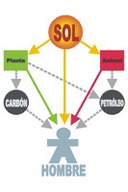
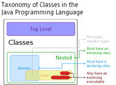
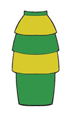

Utilización avanzada de clases
Utilización avanzada de clases.
Caso práctico
En las últimas semanas, María y Juan han avanzado muchísimo a lo largo de su recorrido por las estructuras de almacenamiento y el desarrollo de clases, pero María es consciente de que aún quedan cosas por ver en lo que respecta a la Programación Orientada a Objetos. Aún recuerda que cuando aprendió a escribir sus propias clases, con sus atributos y sus métodos, se quedaron muchos conceptos sin terminar de aclarar y que serían estudiados más adelante: qué tipos de relación pueden existir entre distintas clases (composición, agregación, asociación, herencia, etc.), implementación y uso de la herencia, creación y uso de interfaces, clases abstractas, jerarquías de clases, etc.
Ambos saben que faltan unos cuantos conceptos por asimilar y que sin duda les van a proporcionar más herramientas a la hora de desarrollar sus proyectos. En realidad, muchas de estas nociones ya las han intuido al trabajar con las bibliotecas de clases de la API de Java y en cierto modo ya las han utilizado. Parece que ha llegado el momento de formalizar algunos de estos conocimientos para poder emplearlos en sus programas.
Una propiedad o información específica contenida en el interior de un objeto.
Elementos de una clase u objeto compuestos por una serie de sentencias que sirven para describir las acciones a realizar con esa clase u objeto.
Mecanismo mediante el cual una clase puede derivar de otra (clase base, clase padre o superclase) de manera que se extiende la funcionalidad de la primera (especialización).
Una interfaz (o interface) en Java es una especie de clase especial donde todos sus métodos son declarados como abstractos. Es misión del programador implementar sus correspondientes métodos.
Una clase abstracta en Java es aquella que no es instanciable por ser demasiado genérica. Para declarar una clase abstracta en Java se utiliza el modificador abstract. Puede contener métodos abstractos.
Una interfaz de programación de aplicaciones o API (del inglés Application Programming Interface) consiste en el conjunto de clases, interfaces, métodos, funciones, constantes, etc., que ofrece cierta biblioteca para ser utilizado por otro software como una capa de abstracción.
1.- Relaciones entre clases.

Cuando estudiaste el concepto de clase, ésta fue descrita como una especie de mecanismo de definición (plantillas), en el que se basaría el entorno de ejecución a la hora de construir un objeto: un mecanismo de definición de objetos.
Por tanto, a la hora de diseñar un conjunto de clases para modelar el conjunto de información cuyo tratamiento se desea automatizar, es importante establecer apropiadamente las posibles relaciones que puedan existir entre unas clases y otras.
En algunos casos es posible que no exista relación alguna entre unas clases y otras, pero lo más habitual es que sí la haya: una clase puede ser una especialización de otra, o bien una generalización, o una clase contiene en su interior objetos de otra, o una clase utiliza a otra, etc. Es decir, que entre unas clases y otras habrá que definir cuál es su relación (si es que existe alguna).
Se pueden distinguir diversos tipos de relaciones entre clases:
- Clientela o uso. Cuando una clase emplea objetos de otra clase (por ejemplo, al pasarlos como parámetros a través de un método o al declarar objetos como variables locales dentro del cuerpo de un método).
- Composición, agregación, asociación. Cuando alguno de los atributos de una clase es una referencia a un objeto de otra clase. Dependiendo de la dependencia entre el objeto "contenedor" y el "contenido" se puede hablar de unos casos u otros. En el caso de la composición entendemos que la existencia de los objetos contenidos es imprescindible para que pueda existir el objeto contenedor, de manera que se suelen instanciar en el constructor de la clase contenedora; mientras que si se trata de objetos que el objeto contendor puede incluir, pero también puede no hacerlo, se suele hablar de agregación. Además, en este caso, el objeto contenido podría existir de manera independiente a la existencia del objeto contenido. En el caso de la asociación, se trata de objetos que pueden existir de manera independiente, aunque en un momento dado pueden tener que algún tipo de relación entre ellos.
- Anidamiento. Cuando se definen clases en el interior de otra clase. Se trataría de un tipo muy específico de composición en la que no solo ya la dependencia entre los objetos interiores y contenedores es muy fuerte, sino que incluso la definición de la clase interior solo existe dentro de la clase contenedora. Este tipo de relación es muy dependiente de la implementación del lenguaje con el que se vaya a trabajar (Java, C++, Ruby, Python, etc.).
- Herencia. Cuando una clase comparte determinadas características con otra (clase base), añadiéndole alguna funcionalidad específica (especialización). A esto será a lo que nos dedicaremos durante la mayor parte de la unidad.
La relación de clientela la llevas utilizando desde que has empezado a programar en Java, pues desde tu clase principal (clase con método main) has estado declarando, creando y utilizando objetos de otras clases. Por ejemplo: si usas un objeto String dentro de la clase principal de tu programa, éste será cliente de la clase String (como sucederá con prácticamente cualquier programa que se escriba en Java). Es la relación fundamental y más habitual entre clases (la utilización de unas clases por parte de otras) y, por supuesto, la que más vas a utilizar tú también. De hecho, llevas haciéndolo desde que aprendiste a trabajar con objetos.

La relación de composición es posible que ya la hayas tenido en cuenta si has definido clases que contenían (tenían como atributos) otros objetos en su interior, lo cual es bastante frecuente. Por ejemplo, si implementas una clase donde alguno de sus atributos es una fecha (un objeto de tipo LocalDate) ya se está produciendo una relación de tipo composición (tu clase “tiene” una fecha, es decir, está compuesta por un objeto LocalDate y por algunos elementos más).
La relación de anidamiento (o anidación) es quizá menos usual, pues implica declarar unas clases dentro de otras (clases internas o anidadas). En algunos casos puede resultar útil para tener un nivel más de encapsulamiento y ocultación de información. Un ejemplo típico de anidamiento es el de las clases anónimas, que suelen utilizarse en contextos donde hay que definir manejadores de eventos, como puede ser el caso de las interfaces gráficas de usuario.
En el caso de la relación de herencia se trata de unas clases que derivan de otras. Un ejemplo en el que se produce habitualmente es en el caso de los objetos que forman parte de las interfaces gráficas, donde un componente hereda propiedades de sus ascendientes. Más delante lo verás al declarar componentes gráficos que hereden de algún otro componente (JFrame, JDialog, etc.).
Podría decirse que tanto la composición como la anidación son casos particulares de clientela, pues en realidad en todos esos casos una clase está haciendo uso de otra (al contener atributos que son objetos de la otra clase, al definir clases dentro de otras clases, al utilizar objetos en el paso de parámetros, al declarar variables locales utilizando otras clases, etc.).
A lo largo de la unidad, irás viendo distintas posibilidades de implementación de clases haciendo uso de estas relaciones, centrándonos especialmente en el caso de la herencia, que es la que permite establecer las relaciones más complejas y enriquecedoras.
Relación entre dos clases donde una de ellas (la subclase) es una versión más especializada que la otra (la superclase), compartiendo características en común pero añadiendo ciertas características específicas que la especializan. El punto de vista inverso sería la generalización.
Relación entre dos clases donde una de ellas (la superclase) es una versión más genérica que la otra (la subclase), compartiendo características en común pero sin las propiedades específicas que caracterizan a la subclase. El punto de vista inverso sería la especialización.
Consiste en el ocultamiento del estado de un objeto (de sus datos miembro o atributos) de manera que sólo se puede cambiar mediante las operaciones (métodos) definidas para ese objeto. Cada objeto está aislado del exterior de manera que se protegen los datos contra su modificación por quien no tenga derecho a acceder a ellos, eliminando efectos secundarios y colaterales no deseados. Este modo de proceder permite que el usuario de una clase pueda obviar la implementación de los métodos y propiedades para concentrarse sólo en cómo usarlos. Por otro lado se evita que el usuario pueda cambiar su estado de manera imprevista e incontrolada.
Es el efecto que se consigue gracias a la encapsulación: se evita la visibilidad de determinados miembros de una clase al resto del código del programa para de ese modo comunicarse con los objetos de la clase únicamente a través de su interfaz (métodos).
Autoevaluación
1.1.- Composición, agregación, asociación.
Como ya hemos indicado, se producen este tipo de relaciones cuando alguno de los atributos de una clase es una referencia a un objeto de otra clase. Es decir, que la clase "A" contiene una o más referencias a objetos de la clase "B".
También se dijo que se hablará de un tipo u otro de relación en función de la dependencia que exista entre el objeto "contenedor" y el "contenido". Diferenciar unos casos de otros en resultar un tanto en algunos casos. Veamos algunos ejemplos:
- En el caso de la composición entendemos que la existencia de los objetos contenidos es imprescindible para que pueda existir el objeto contenedor, de manera que se suelen instanciar en el constructor de la clase contenedora. Por ejemplo, si una clase
Personacontiene un atributo llamadocabeza, que es una instancia de la claseCabeza, está claro que se trata de un atributo imprescindible para su existencia y que probablemente la existencia de la cabeza no tendría sentido sin la existencia del cuerpo al que pertenece (aunque eso ya dependería del contexto de diseño). - Si se trata de objetos que el objeto contenedor puede incluir, pero también puede no hacerlo, se suele hablar de agregación. Además, en este caso, el objeto contenido podría existir de manera independiente a la existencia del objeto contenido. Si seguimos con el ejemplo de una persona, podríamos hablar de un atributo
ropa, que sería una referencia a un objeto de tipoRopa, que la persona podría o no tener, e incluso tener varias instancias de ella (un array de referencias a objetosRopa, por ejemplo). Además, esa ropa podría existir de manera independiente a la existencia de esa persona. En estos casos, normalmente la instanciación del objeto contenido se hace de manera independiente a la instanciación del objeto contenedor, pues es posible que el primero ya existiera antes de que se creara el segundo. - En el caso de la asociación, se trata de objetos que pueden existir de manera independiente, aunque en un momento dado pueden tener algún tipo de relación entre ellos. Ejemplo: una persona podría trabajar para una determinada empresa en un momento dado, pero en otros momentos podría estar en paro o incluso trabajar para otra empresa. Por otro lado, otras personas podrían también trabajar para esa empresa.
Aunque se trata de una diferencia que puede ser importante desde el punto de vista del diseño de una aplicación, desde la perspectiva del programador no siempre será posible implementar estas distinciones, pues se trata de algo que dependerá del lenguaje de programación que se utilice. En este curso no nos vamos a obsesionar por buscar esas diferencias, que sería más una cuestión de diseño. Normalmente, englobaremos todas estas posibles relaciones con el nombre genérico de composición, pues la forma de implementarlo en un lenguaje será prácticamente la misma: atributos de clases que son a su vez referencias a objetos de otras clases (a veces, incluso, referencias a objetos de la misma clase). Si debemos hacer algo más al respecto, ya se nos indicará desde las especificaciones de diseño (si los objetos contenidos deben ser instanciados en el constructor de la clase contendora, si los objetos pueden existir de manera independiente, etc.).
Por ejemplo, si describes una entidad País compuesta por una serie de atributos, entre los cuales se encuentra una lista de comunidades autónomas, podrías decir que los objetos de la clase Pais contienen varias referencias a objetos de la clase ComunidadAutonoma (por ejemplo, en un array). Por otro lado, los objetos de la clase ComunidadAutonoma podrían contener como atributos referencias a objetos de la clase ProvinciaMunicipio
Como puedes observar, la composición puede encadenarse todas las veces que sea necesario hasta llegar a objetos básicos del lenguaje o hasta tipos primitivos que ya no contendrán otros objetos en su interior. Ésta es la forma más habitual de definir clases: mediante otras clases ya definidas anteriormente. Es una manera eficiente y sencilla de gestionar la reutilización de todo el código ya escrito. Si se definen clases que describen entidades distinguibles y con funciones claramente definidas, podrán utilizarse cada vez que haya que representar objetos similares dentro de otras clases.
La composición (así como la agregación y la asociación) se produce cuando una clase contiene algún atributo que es una referencia a un objeto de otra clase.
Una forma sencilla de plantearte si la relación que existe entre dos clases A y B es de composición podría ser mediante la expresión idiomática “tiene un”: “la clase A tiene uno o varios objetos de la clase B”, o visto de otro modo: “Objetos de la clase B pueden formar parte de la clase A”.
Algunos ejemplos de composición podrían ser:
- Un coche tiene un motor y tiene cuatro ruedas.
- Una persona tiene un nombre, una fecha de nacimiento, una cuenta bancaria asociada para ingresar la nómina, etc.
- Un cocodrilo bajo investigación científica que tiene un número de dientes determinado, una edad, unas coordenadas de ubicación geográfica (medidas con GPS), etc.
- Una clase
Rectangulopodría contener en su interior dos objetos de la clasePuntopara almacenar los vértices inferior izquierdo y superior derecho. - Una clase
Empleadopodría contener en su interior un objeto de la claseDnipara almacenar su DNI/NIF, y otro objeto de la claseCuentaBancariapara guardar la cuenta en la que se realizan los ingresos en nómina. - Una clase
JFrame(javax.Swing.JFrame) de la interfaz gráfica contiene en su interior referencias a objetos de las clasesJRootPane,JMenuBaroJLayeredPane, pues contiene menús, paneles, etc.
Reflexiona
Hemos resumido las relaciones de composición, agregación y asociación con la frase "tiene un".
Imagina que vamos a implementar las clases Ave y Loro. ¿Podría decirse que la relación que existe entre la clase Ave y la clase Loro es una relación de composición, agregación o asociación? Es decir, ¿podría decirse que un objeto de un tipo "tiene" un objeto del otro tipo?
Ejercicio Resuelto
Declara en Java los atributos de una clase Persona con las siguientes características:
- primer apellido;
- segundo apellido;
- nombre;
- fecha de nacimiento.
¿Se estaría produciendo un caso de composición?
1.2.- Herencia.
El mecanismo que permite crear clases basándose en otras que ya existen es conocido como herencia. Como ya has visto en unidades anteriores, Java implementa la herencia mediante la utilización de la palabra reservada extends.
El concepto de herencia es algo bastante simple y, sin embargo, muy potente: cuando se desea definir una nueva clase y ya existen clases que, de alguna manera, implementan parte de la funcionalidad que se necesita, es posible crear una nueva clase derivada de la que ya tienes. Al hacer esto se posibilita la reutilización de todos los atributos y métodos de la clase que se ha utilizado como base (clase padre o superclase), sin la necesidad de tener que escribirlos de nuevo.
Una subclase hereda todos los miembros de su clase padre (atributos, métodos y clases internas). Los constructores no se heredan, aunque se pueden invocar desde la subclase.
Algunos ejemplos de herencia podrían ser:
- Un coche es un vehículo (heredará atributos como la velocidad máxima o métodos como parar y arrancar).
- Un empleado es una persona (heredará atributos como el nombre o la fecha de nacimiento).
- Un rectángulo es una figura geométrica en el plano (heredará métodos como el cálculo de la superficie o de su perímetro).
- Un cocodrilo es un reptil (heredará atributos como por ejemplo el número de dientes).
En este caso la expresión idiomática que puedes usar para plantearte si el tipo de relación entre dos clases A y B es de herencia podría ser “es un”: “la clase A es un tipo específico de la clase B” (especialización), o visto de otro modo: “la clase B es un caso general de la clase A” (generalización).
Otros ejemplos de herencia, relacionados con las interfaces gráficas, que veremos más adelante en otra unidad, podrían ser:
- Una ventana en una aplicación gráfica puede ser una clase que herede de
JFrame(componenteSwing:javax.swing.JFrame), de esta manera esa clase será un marco que dispondrá de todos los métodos y atributos deJFramemás aquellos que tú decidas incorporarle al rellenarlo de componentes gráficos. - Una caja de diálogo puede ser un tipo de
JDialog(otro componenteSwing: javax.swing.JDialog).
En Java, la clase Object (dentro del paquete java.lang) define e implementa el comportamiento común a todas las clases (incluidas aquellas que tú escribas). Como recordarás, ya se dijo que en Java cualquier clase deriva en última instancia de la clase Object.
Todas las clases tienen una clase padre, que a su vez también posee una superclase, y así sucesivamente hasta llegar a la clase Object. De esta manera, se construye lo que habitualmente se conoce como una jerarquía de clases, que en el caso de Java tendría a la clase Object en la raíz.

Autoevaluación
Retroalimentación
Falso
No es cierto. Aunque no indiques explícitamente ningún tipo de herencia, el compilador asumirá entonces de manera implícita que tu clase hereda de la clase Object, que define e implementa el comportamiento común a todas las clases.
1.3.- ¿Herencia o composición?
Cuando escribas tus propias clases, debes intentar tener claro en qué casos utilizar la composición y cuándo la herencia:

- Composición: cuando una clase contenga referencias a objetos de otras clases. En estos casos se incluyen objetos de esas clases, pero no necesariamente se comparten características con ellos (no se heredan características de esos objetos, sino que directamente se utilizarán sus atributos y sus métodos). Esos objetos incluidos no son más que atributos miembros de la clase que se está definiendo.
- Herencia: cuando una clase cumple todas las características de otra. En estos casos la clase derivada es una especialización (o particularización, extensión o restricción) de la clase base. Desde otro punto de vista se diría que la clase base es una generalización de las clases derivadas.
Por ejemplo, imagina que dispones de una clase Punto (ya la has utilizado en otras ocasiones) y decides definir una nueva clase llamada Círculo. Dado que un punto tiene como atributos sus coordenadas en plano (x1, y1), decides que es buena idea aprovechar esa información e incorporarla en la clase Circulo que estás escribiendo. Para ello utilizas la herencia, de manera que al derivar la clase Círculo de la clase Punto, tendrás disponibles los atributos x1 e y1. Ahora solo faltaría añadirle algunos atributos y métodos más como por ejemplo el radio del círculo, el cálculo de su área y su perímetro, etc.
En principio parece que la idea pueda funcionar pero es posible que más adelante, si continúas construyendo una jerarquía de clases, observes que puedas llegar a conclusiones incongruentes al suponer que un círculo es una especialización de un punto (un tipo de punto). ¿Todas aquellas figuras que contengan uno o varios puntos deberían ser tipos de punto? ¿Y si tienes varios puntos? ¿Cómo accedes a ellos? ¿Un rectángulo también tiene sentido que herede de un punto? No parece muy buena idea.

Parece que en este caso habría resultado mejor establecer una relación de composición. Analízalo detenidamente: ¿cuál de estas dos situaciones te suena mejor?
- “Un círculo es un punto (su centro)” y, por tanto, heredará las coordenadas x1 e y1 que tiene todo punto. Además, tendrá otras características específicas como el radio o métodos como el cálculo de la longitud de su perímetro o el cálculo de su área.
- “Un círculo tiene un punto (su centro)”, junto con algunos atributos más, como por ejemplo el radio. También tendrá métodos para el cálculo de su área o de la longitud de su perímetro.
Parece que en este caso la composición refleja con mayor fidelidad la relación que existe entre ambas clases. Normalmente, suele ser suficiente con plantearse las preguntas “¿A es un tipo de B?” o “¿A contiene elementos de tipo B?”.
2.- Composición.
Caso práctico
María es consciente de que las relaciones que pueden existir entre dos clases pueden ser de clientela, composición, herencia, etc. También sabe que una forma muy práctica de distinguir entre la necesidad de una relación de composición de herencia suele ser mediante las preguntas “¿Es la clase A un tipo de clase B?” o “¿Tiene la clase A elementos de la clase B”? Normalmente, ese método le suele funcionar a la hora de decidirse por la composición o por la herencia.
Pero, ¿qué hay que hacer para establecer una relación de composición? ¿Es necesario indicar algún modificador al definir las clases? En tal caso, ¿se indicaría en la clase continente o en la contenida? ¿Afecta de alguna manera al código que hay que escribir? En definitiva, ¿cómo se indica que una clase contiene instancias de otra clase en su interior?
Mientras María piensa en voz alta, Ada se acerca con una carpeta en la mano y se la entrega:
– “Bueno, aquí tienes algunas clases básicas que nos hacen falta para el proyecto de la Clínica Veterinaria. A ver qué tal os quedan…”.
2.1.- Sintaxis de la composición.
Para indicar que una clase contiene objetos de otra clase no es necesaria ninguna sintaxis especial. Cada uno de esos objetos no es más que un atributo y, por tanto, debe ser declarado como tal:
class <nombreClase> {
[modificadores] <NombreClase1> nombreAtributo1;
[modificadores] <NombreClase2> nombreAtributo2;
. . .
}En unidades anteriores has trabajado con la clase Punto, que definía las coordenadas de un punto en el plano, y con la clase Rectangulo, que definía una figura de tipo rectángulo también en el plano a partir de dos de sus vértices (inferior izquierdo y superior derecho). Tal y como hemos formalizado ahora los tipos de relaciones entre clases, parece bastante claro que aquí tendrías un caso de composición: “un rectángulo contiene puntos”. Por tanto, podrías ahora redefinir los atributos de la clase Rectangulo (cuatro números reales) como dos objetos de tipo Punto:

class Rectangulo {
private Punto vertice1;
private Punto vertice2;
. . .
}Ahora los métodos de esta clase deberán tener en cuenta que ya no hay cuatro atributos de tipo double, sino dos atributos de tipo Punto (cada uno de los cuales contendrá en su interior dos atributos de tipo double).
Autoevaluación
Retroalimentación
Falso
No. El hecho de declarar un atributo como de una clase determinada está ya indicando de manera implícita que existe una relación de composición (un objeto que contiene otros objetos en su interior) sin necesidad de tener que indicar nada más. Además, el modificador object no existe. Lo que sí existe es la clase Object, de la cual derivan todas las clases en Java.
Ejercicios resueltos
Intenta rescribir los siguientes los métodos de la clase Rectangulo teniendo en cuenta ahora su nueva estructura de atributos (dos referencias a objetos de la clase Punto, en lugar de cuatro elementos de tipo double):
- Método
calcularSuperfice, que calcula y devuelve el área de la superficie encerrada por la figura. - Método
calcularPerimetro, que calcula y devuelve la longitud del perímetro de la figura.
Declara en Java los atributos de una clase llamada CasaDomotica que contenga dos objetos de tipo Bombilla, así como una cadena de caracteres con el identificador de la vivienda y una fecha que indique cuándo se construyó.
2.2.- Uso de la composición (I). Preservación de la ocultación en los getters.

Como ya has observado, la relación de composición no tiene más misterio a la hora de implementarse que simplemente declarar atributos de las clases que necesites dentro de la clase que estés diseñando.
Ahora bien, cuando escribas clases que contienen objetos de otras clases (lo cual será lo más habitual) deberás tener un poco de precaución con aquellos métodos que devuelvan información acerca de los atributos de la clase (métodos “obtenedores” o de tipo get).
Como ya viste en la unidad dedicada a la creación de clases, lo normal suele ser declarar los atributos como privados (o protegidos, como veremos un poco más adelante) para ocultarlos a los posibles clientes de la clase (otros objetos que en el futuro harán uso de la clase). Para que otros objetos puedan acceder a la información contenida en los atributos, o al menos a una parte de ella, deberán hacerlo a través de métodos que sirvan de interfaz, de manera que sólo se podrá tener acceso a aquella información que el creador de la clase haya considerado oportuna. Del mismo modo, los atributos solamente serán modificados desde los métodos de la clase, que decidirán cómo y bajo qué circunstancias deben realizarse esas modificaciones. Con esa metodología de acceso se tenía perfectamente separada la parte de manipulación interna de los atributos de la interfaz con el exterior.
Hasta ahora los métodos de tipo get devolvían tipos primitivos, es decir, copias del contenido (a veces con algún tipo de modificación o de formato) que había almacenado en los atributos, pero los atributos seguían “a salvo” como elementos privados de la clase. Pero, a partir de este momento, al tener objetos dentro de las clases y no solo tipos primitivos, es posible que en un determinado momento interese devolver un objeto completo.
Ahora bien, cuando vayas a devolver un objeto habrás de obrar con mucha precaución. Si en un método de la clase devuelves directamente un objeto que es un atributo, estarás ofreciendo directamente una referencia a un objeto atributo que probablemente has definido como privado. ¡De esta forma estás volviendo a hacer público un atributo que inicialmente era privado!
Para evitar ese tipo de situaciones (ofrecer al exterior referencias a objetos privados que podrían ser modificados) puedes optar por diversas alternativas, procurando siempre evitar la devolución directa de un atributo que sea un objeto:
- una opción podría ser devolver siempre tipos primitivos;
- otra alternativa podría ser la de obligar a que los objetos contenidos que vayan a ser devueltos sean de clases inmutables, con lo cual, aunque se tenga acceso a ellos, no podrán ser modificados;
- dado que lo anterior no siempre es posible, o como mínimo poco práctico, otra posibilidad es crear un nuevo objeto que sea una copia del atributo que quieres devolver y utilizar ese objeto como valor de retorno. Es decir, crear una copia del objeto especialmente para devolverlo. De esta manera, el código cliente de ese método podrá manipular a su antojo ese nuevo objeto, pues no será una referencia al atributo original, sino un nuevo objeto con el mismo contenido.
Por último, debes tener en cuenta que es posible que en algunos casos sí se necesite realmente la referencia al atributo original (algo muy habitual en el caso de atributos estáticos). En tales casos, no habrá problema en devolver directamente el atributo para que el código llamante (o código cliente) haga el uso que estime oportuno de él. Será responsabilidad del programador que haga la llamada para obtener el objeto contenido el uso o modificación que haga de sus atributos.
Debes evitar por todos los medios la devolución de un atributo que sea una referencia a un objeto modificable (estarías dando directamente una referencia al atributo, visible y manipulable desde fuera), salvo que se trate de un caso en el que deba ser así.
Para entender estas situaciones un poco mejor, podemos volver al objeto Rectangulo y observar sus nuevos métodos de tipo get.
Ejercicios resueltos
Getters de la clase Rectangulo
Dada la clase Rectangulo, escribe sus nuevos métodos getVertice1 y getVertice2 para que devuelvan los vértices inferior izquierdo y superior derecho del rectángulo (objetos de tipo Punto), teniendo en cuenta su nueva estructura de atributos (dos objetos de la clase Punto, en lugar de cuatro elementos de tipo double).
Si al resolver el anterior ejercicio, simplemente hemos devuelto una referencia a los objetos vertice1 o vertice2, hemos de tener en cuenta que, de alguna manera, estamos haciendo público un atributo que fue declarado como privado y que podría ser susceptible de modificación desde fuera de la clase, sin ningún control desde ningún método. Si no nos importa que eso pueda suceder, aquí habría terminado nuestra labor.
Ahora bien, si deseamos evitar que pueda producirse esa situación, ¿qué podríamos hacer?
Ejercicio Resuelto
Getters de la clase CasaDomotica
Dada la clase CasaDomotica, escribe sus métodos getBombilla1 y getBombilla2 para que devuelvan las referencias a los objetos de tipo Bombilla que contiene un objeto del tipo CasaDomotica.
Como sucedía en el ejercicio de los objetos de tipo Rectangulo y sus componentes de tipo Punto, si simplemente hemos devuelto una referencia a los objetos bombilla1 o bombilla2, hemos de tener en cuenta que, nuevamente, estamos permitiendo que esos objetos puedan ser manipulados desde fuera de su objeto "contenedor". Es decir, que estamos volviendo a hacer público un atributo que fue declarado como privado y que podría ser susceptible de modificación desde fuera de la clase, sin ningún control desde ningún método. Si no nos importa que eso pueda suceder, aquí habría finalizado nuestra tarea.
Ahora bien, si deseamos evitar que pueda producirse esa situación, ¿qué podríamos hacer?
Supongamos que ahora deseamos implementar también los métodos getId y getFechaConstruccion para obtener el identificador de la vivienda y su fecha de construcción respectivamente, ¿cómo podríamos hacerlo? ¿Nos encontraríamos ante una situación similar a la anterior? ¿Podrían esos valores del objeto ser manipulados desde el exterior del mismo?
2.2.1.- Uso de la composición (II). Preservación de la ocultación en setters y llamadas a constructores.
Otro factor que debes considerar, a la hora de escribir clases que contengan como atributos objetos de otras clases, es su comportamiento a la hora de instanciarse. Durante el proceso de creación de un objeto (constructor) de la clase contenedora habrá que tener en cuenta también la creación (llamadas a constructores) de aquellos objetos que son contenidos.
El constructor de la clase contenedora debe invocar a los constructores de las clases de los objetos contenidos.

En este caso hay que tener cuidado con las referencias a objetos que se pasan como parámetros para rellenar el contenido de los atributos. Es conveniente hacer una copia de esos objetos y utilizar esas copias para los atributos pues si se utiliza la referencia que se ha pasado como parámetro, el código cliente de la clase podría tener acceso a ella sin necesidad de pasar por la interfaz de la clase (volveríamos a dejar abierta una puerta pública a algo que quizá sea privado).
Además, si el objeto parámetro que se pasó al constructor formaba parte de otro objeto, esto podría ocasionar un desagradable efecto colateral si esos objetos son modificados en el futuro desde el código cliente de la clase, ya que no sabes de dónde provienen esos objetos, si fueron creados especialmente para ser usados por el nuevo objeto creado o si pertenecen a otro objeto que podría modificarlos más tarde. Es decir, correrías el riesgo de estar “compartiendo” esos objetos con otras partes del código, sin ningún tipo de control de acceso y con las nefastas consecuencias que eso podría tener: cualquier cambio de ese objeto afectaría a partes del programa supuestamente independientes, que entienden ese objeto como suyo.
En el fondo los objetos no son más que variables de tipo referencia a la zona de memoria en la que se encuentra toda la información del objeto en sí mismo. Esto es, puedes tener un único objeto y múltiples referencias a él. Pero sólo se trata de un objeto, y cualquier modificación desde una de sus referencias afectaría a todas las demás, pues estamos hablando del mismo objeto.
Recuerda también que sólo se crean objetos cuando se llama a un constructor (uso de new) o bien cuando se invocan métodos que sabemos positivamente que devuelven nuevas instancias de objetos. Si realizas asignaciones o pasos de parámetros, no se están copiando o pasando copias de los objetos, sino simplemente de las referencias, y por tanto se tratará siempre del mismo objeto.
Se trata de un efecto similar al que sucedía en los métodos de tipo get, pero en este caso en sentido contrario. Es decir, en lugar de que nuestra clase “regale” al exterior uno de sus atributos objeto mediante una referencia, en esta ocasión se “adueña” de un parámetro objeto que probablemente pertenezca a otro objeto y que es posible que en el futuro haga uso de él.
Para entender mejor estos posibles efectos podemos continuar con el ejemplo de la clase Rectangulo que contiene en su interior dos objetos de la clase Punto. En los constructores del rectángulo habrá que incluir todo lo necesario para crear dos instancias de la clase Punto evitando las referencias a parámetros (haciendo copias).
Del mismo modo, si nuestra clase dispone de métodos set que reciben como parámetros referencias a objetos, se producirá exactamente el mismo fenómeno: si no se realiza una copia del objeto al que se hace referencia, es posible que ese objeto en el futuro pueda ser modificado desde fuera de la clase.
Autoevaluación
Retroalimentación
Falso
No es así. La variable a se habrá convertido en una referencia al mismo objeto al que apunta la variable b, pues no se ha hecho una copia de b. Ahora se tendrán dos variables referencia (a y b) a un mismo objeto (el que fue inicialmente instanciado y asignado a la variable b). Por otro lado, el objeto al que apuntaba la variable a sí se habrá perdido y el recolector de basura se encargará de destruirlo cuando lo considere oportuno (salvo que existieran otras referencias a él).
Ejercicio resuelto
Constructores de la clase Rectangulo.
Vamos a intentar rescribir los constructores de la clase Rectangulo teniendo en cuenta ahora no solamente su nueva estructura de atributos (dos referencias a objetos de la clase Punto, en lugar de cuatro valores de tipo double), sino también considerando que si se reciben referencias a objeto como parámetros, es posible que nos interese realizar una copia de estos.
1. Implementa un constructor sin parámetros que haga que los valores iniciales de las esquinas del rectángulo sean (0,0) y (1,1).
2. Implementa un constructor con cuatro parámetros, x1, y1, x2, y2, que cree un rectángulo con los vértices (x1, y1) y (x2, y2).
3. Implementa un constructor con dos parámetros, punto1 y punto2, que rellene los valores iniciales de los atributos del rectángulo con los valores proporcionados a través de los parámetros.
4. Implementa un constructor con dos parámetros, base y altura, que cree un rectángulo donde el vértice inferior derecho esté ubicado en la posición (0,0) y que tenga una base y una altura tal y como indican los dos parámetros proporcionados.
5. Implementa un constructor copia a partir de otro objeto Rectangulo ya existente.
Ejercicio Resuelto
Constructores de la clase CasaDomotica
1. Dada la clase CasaDomotica, que ya introdujimos en secciones anteriores, implementa un constructor que reciba cuatro parámetros: una cadena de identificación (String), una fecha de construcción (LocalDate) y dos bombillas (Bombilla).
Valora las diferentes posibilidades que tienes a la hora de llevar a cabo la implementación y qué consecuencias tendrían.
2. Supongamos ahora que la clase CasaDomotica en lugar de tener dos atributos de tipo Bombilla, tiene como atributo un array de referencias a objetos de tipo Bombilla. Será en el constructor cuando ese array se rellene en función de la cantidad de parámetros de tipo Bombilla se reciban. Esto significa que el constructor tendrá ahora una lista de parámetros variable de tipo Bombilla. ¿Cómo lo implementarías?
2.3.- Clases anidadas o internas.

En algunos lenguajes, es posible definir una clase dentro de otra clase (clases internas):
class ClaseContenedora {
// Cuerpo de la clase
. . .
class ClaseInterna {
// Cuerpo de la clase interna
. . .
}
}Se pueden distinguir varios tipos de clases internas:
- Clases internas estáticas (o clases anidadas), declaradas con el modificador
static. - Clases internas miembro, conocidas habitualmente como clases internas. Declaradas al máximo nivel de la clase contenedora y no estáticas.
- Clases internas locales, que se declaran en el interior de un bloque de código (normalmente dentro de un método).
- Clases anónimas, similares a las internas locales, pero sin nombre (sólo existirá un objeto de ellas y, al no tener nombre, no tendrán constructores). Se suelen usar en la gestión de eventos en las interfaces gráficas.
Aquí tienes algunos ejemplos:
class ClaseContenedora {
…
static class ClaseAnidadaEstatica {
…
}
class ClaseInterna {
…
}Las clases anidadas, como miembros de una clase que son (miembros de claseExterna), pueden ser declaradas con los modificadores public, protected, private o de paquete, como el resto de miembros.
Las clases internas (no estáticas) tienen acceso a otros miembros de la clase dentro de la que está definida aunque sean privados (se trata en cierto modo de un miembro más de la clase), mientras que las anidadas (estáticas) no.
Las clases internas se utilizan en algunos casos para:
- Agrupar clases que sólo tiene sentido que existan en el entorno de la clase en la que han sido definidas, de manera que se oculta su existencia al resto del código.
- Incrementar el nivel de encapsulación y ocultamiento.
- Proporcionar un código fuente más legible y fácil de mantener (el código de las clases internas y anidadas está más cerca de donde es usado).
En Java es posible definir clases internas y anidadas, permitiendo todas esas posibilidades. Aunque para los ejemplos con los que vas a trabajar no las vas a necesitar por ahora.
Para saber más
Si quieres ampliar un poco más sobre las clases internas, puedes echar un vistazo a la siguiente presentación:
También puedes consultar los siguientes artículos sobre clases anidadas, internas, locales y anónimas en la documentación oficial de Java (en inglés):
3.- Herencia.
Caso práctico

María ha estado desarrollando junto con Juan algunas clases para el proyecto de la Clínica Veterinaria. Hasta el momento todo ha ido bien. Han tenido que crear clases que contenían en su interior instancias de otras clases (atributos que eran objetos). Han tenido cuidado con los constructores y las referencias a los atributos internos y parece que, por ahora, todo funciona perfectamente. Pero ahora necesitan aprovechar algunas de las características que tienen algunas de las clases que ya han escrito, y no quieren tener que volver a escribir todos esos métodos en las nuevas clases. María sabe que es una ocasión perfecta para utilizar el concepto de herencia:
– “Si la clase A tiene características en común (atributos y métodos) con la clase B aportando algunas características nuevas, puede decirse que la clase A es una especialización de la clase B, ¿no es así?”. – Le pregunta María a Juan.
– “Así es. Es un caso claro de herencia. La clase A hereda de la clase B”. – Contesta Juan.
– “De acuerdo. Pues vamos manos a la obra. ¿Cómo indicábamos que una clase heredaba de otra? Creo recordar que se usaba la palabra reservada extends. ¿Había que hacer algo más?” – Dice María con entusiasmo.
– “Parece que ha llegado el momento de repasar la sintaxis de la herencia en Java”.
Como ya has estudiado, la herencia es el mecanismo que permite definir una nueva clase a partir de otra, pudiendo añadir nuevas características, sin tener que volver a escribir todo el código de la clase base.
La clase de la que se hereda suele ser llamada clase base, clase padre o superclase. A la clase que hereda se le suele llamar clase hija, clase derivada o subclase.
Una clase derivada puede ser a su vez clase padre de otra que herede de ella y así sucesivamente dando lugar a una jerarquía de clases, excepto aquellas que estén en la parte de arriba de la jerarquía (sólo serán clases padre) o en la parte de abajo (sólo serán clases hijas).
Una clase hija no tiene acceso a los miembros privados de su clase padre, tan solo a los públicos (como cualquier parte del código tendría) y los protegidos (a los que sólo tienen acceso las clases derivadas y las del mismo paquete). Aquellos miembros que sean privados en la clase base también habrán sido heredados, pero el acceso a ellos estará restringido al propio funcionamiento de la superclase y sólo se podrá acceder a ellos si la superclase ha dejado algún medio indirecto para hacerlo (por ejemplo a través de algún método).
Todos los miembros de la superclase, tanto atributos como métodos, son heredados por la subclase. Algunos de estos miembros heredados podrán ser redefinidos o sobrescritos (overriden) y también podrán añadirse nuevos miembros. De alguna manera podría decirse que estás “ampliando” la clase base con características adicionales o modificando algunas de ellas (proceso de especialización).
Una clase derivada extiende la funcionalidad de la clase base sin tener que volver a escribir el código de la clase base.
Clase de la que hereda otra clase. Se heredarán todas aquellas características que la clase padre permita.
Clase que hereda de otra clase. Se heredan todas aquellas características que la clase padre permita.
Autoevaluación
Retroalimentación
Falso
No es del todo cierto. Se heredan todos los miembros, pero la clase derivada no tendrá un acceso directo a aquellos miembros de la clase base que sean privados.
3.1.- Sintaxis de la herencia.
En Java la herencia se indica mediante la palabra reservada extends:
[modificador] class ClasePadre {
// Cuerpo de la clase
…
}
[modificador] class ClaseHija extends ClasePadre {
// Cuerpo de la clase
…
}Imagina que tienes una clase Persona que contiene atributos como nombre, apellidos y fechaNacimiento:
/**
* Clase que representa a una persona
*/
public class Persona {
private String nombre;
private String apellidos;
private LocalDate fechaNacimiento;
…
} 
Es posible que, más adelante, necesites una clase Alumno que compartirá esos atributos (dado que todo alumno es una persona, pero con algunas características específicas que lo especializan). En tal caso, tendrías la posibilidad de crear una clase Alumno que repitiera todos esos atributos o bien heredar de la clase Persona:
/**
* Clase que representa a un alumno
*/
public class Alumno extends Persona {
private String grupo;
private double notaMedia;
…
}A partir de ahora, un objeto de la clase Alumno contendrá los atributos grupo y notaMedia (propios de la clase Alumno), pero también nombre, apellidos y fechaNacimiento (propios de su clase base Persona y que, por tanto, ha heredado).
Autoevaluación
Retroalimentación
Falso
La herencia se indica mediante la palabra reservada extends.
Ejercicio resuelto
Imagina que también necesitas una clase Profesor, que contará con atributos como nombre, apellidos, fechaNacimiento, nombre, apellidos, fechaNacimiento.
¿Cómo implementarías esa nueva clase con esos nuevos atributos? ¿Cómo aprovecharías los atributos que ya existen en la clase Persona?
Ejercicio Resuelto
Dispositivos de una vivienda domótica
Imagina que deseamos representar diversos dispositivos en una vivienda inteligente y todos ellos tienen una serie de características genéricas comunes, mientras que luego cada uno tendrá unas características específicas.

Las clases Bombilla, Cerradura, etc. serán descendientes de la clase Dispositivo (un tipo específico de dispositivo) y compartirán las mismas características que tiene cualquier dispositivo.
Declara los atributos de una clase Java llamada Dispositivo que represente a un dispositivo de una vivienda inteligente y que tenga las siguientes características:
- identificador (número entero), inmutable;
- descripción (texto), inmutable;
- ubicación, que hace referencia a un número de habitación (número entero), variable.
Declara ahora una clase Bombilla, que tendrá, además de todos los atributos propios de un dispositivo, dos atributos de objeto variables:
- la intensidad actual de la bombilla (número entero no negativo);
- el número de veces que la bombilla ha sido manipulada (encendida o apagada).
Declara también la clase Cerradura, que dispondrá, además de todos los atributos propios de un dispositivo, un atributo de objeto variable que representa el estado de la cerradura. Los posibles estados serán dos: armada/activada/cerrada (true) o bien desarmada/desactivada/abierta (false).
3.2.- Acceso a miembros heredados.
Como ya has visto anteriormente, no es posible acceder a miembros privados de una superclase. Para poder acceder a ellos podrías pensar en hacerlos públicos, pero entonces estarías dando la opción de acceder a ellos a cualquier objeto externo y es probable que tampoco sea eso lo deseable. Para ello se inventó el modificador protected (protegido) que permite el acceso desde clases heredadas, pero no desde fuera de las clases (estrictamente hablando, desde fuera del paquete), que serían como miembros privados.
En la unidad dedicada a la utilización de clases ya estudiaste los posibles modificadores de acceso que podía tener un miembro: sin modificador (acceso de paquete), público, privado o protegido. Aquí tienes de nuevo el resumen:
| Misma clase |
Otra clase del mismo paquete |
Subclase (aunque sea de diferente paquete) |
Otra clase (no subclase) de diferente paquete |
|
|---|---|---|---|---|
public |
X | X | X | X |
protected |
X | X | X | |
| Sin modificador (paquete) | X | X | ||
private |
X |
Si en el ejemplo anterior de la clase Persona se hubieran definido sus atributos como private:
public class Persona {
private String nombre;
private String apellidos;
. . .
}Al definir la clase Alumno como heredera de Persona, no habrías tenido acceso a esos atributos, pudiendo ocasionar un grave problema de operatividad al intentar manipular esa información. Por tanto, en estos casos lo más recomendable habría sido declarar esos atributos como protected:
public class Persona {
protected String nombre;
protected String apellidos;
. . .
}Ejercicios resueltos
Rescribe las clases Alumno y Profesor utilizando el modificador protected para sus atributos del mismo modo que se ha hecho para su superclase Persona.
Rescribe la clase Dispositivo, definida en ejercicios anteriores, utilizando el modificador protected para que todos sus atributos sean visibles desde sus clases derivadas.
Recomendación
Si no existe un buen motivo para que una clase derivada pueda manipular directamente un atributo de una clase superclase, suele ser más seguro declarar ese atributo como privado. Además, siempre se puede implementar en la superclase un método de manipulación del atributo y declararlo como protegido, en lugar de declarar el atributo como protegido.
3.3.- Utilización de miembros heredados (I). Atributos.
Los atributos heredados por una clase son, a efectos prácticos, iguales que aquellos que sean definidos específicamente en la nueva clase derivada.
En el ejemplo anterior la clase Persona disponía de tres atributos y la clase Alumno, que heredaba de ella, añadía dos atributos más. Desde un punto de vista funcional podrías considerar que la clase Alumno tiene cinco atributos: tres por ser Persona (nombre, apellidos y fechaNacimiento) y otros dos más por ser Alumno (grupo y notaMedia).

Ejercicios resueltos
Dadas las clases Persona, Alumno y Profesor con las que has trabajado anteriormente, implementa un método toStringPresentacion para la clase Alumno que genere una cadena que incluya cuatro de sus cinco atributos (dos heredados más dos específicos) usando el siguiente formato, donde la nota media debe aparecer con dos cifras decimales:
El alumno <nombre> <apellidos> del grupo <grupo> tiene una nota media de <notaMedia>Por ejemplo:
El alumno Diosdado Torres Ramos del grupo 1DAW-B tiene una nota media de 7.31métodos getter y setter en las clases Alumno y Profesor para trabajar con sus cinco atributos (tres heredados más dos específicos).
Dadas las clases Dispositivo, Bombilla y Cerradura con las que has trabajado anteriormente, implementa un método toStringEstado para la clase Cerradura que genere una cadena que incluya tres de sus cuatro atributos (dos heredados más uno específico) usando el siguiente formato:
La cerradura <id>, ubicada en la estancia <ubicacion> se encuentra <estado>donde <estado> puede ser "abierta" (si el valor del atributo es false) o "cerrada" (si el valor es true). Por ejemplo:
La cerradura 3, ubicada en la estancia 6 se encuentra abierta3.3.1- Utilización de miembros heredados (II). Métodos.
Del mismo modo que se heredan los atributos, también se heredan los métodos, convirtiéndose a partir de ese momento en otros métodos más de la clase derivada, junto a los que hayan sido definidos específicamente.
En el ejemplo de la clase Persona, si dispusiéramos de métodos get y set para cada uno de sus tres atributos (nombre, apellidos, fechaNacimiento), tendrías seis métodos que podrían ser heredados por sus clases derivadas. Podrías decir entonces que la clase Alumno, derivada de Persona, tiene diez métodos:
-
Seis por ser
Persona(getNombre,getApellidos,getFechaNacimiento,setNombre,setApellidos,setFechaNacimiento). -
Oros cuatro más por ser
Alumno(getGrupo,setGrupo,getNotaMedia,setNotaMedia).
Sin embargo, sólo tendrías que definir esos cuatro últimos (los específicos) pues los genéricos ya los has heredado de la superclase.
Autoevaluación
Retroalimentación
Falso
Los métodos heredados de la superclase están disponibles en la subclase sin tener que hacer nada especial, aunque es cierto, como verás más adelante, que pueden ser redefinidos o ampliados (pero no es obligatorio).Ejercicios resueltos
Implementación de getters en clases derivadas
Dadas las clases Persona, Alumno y Profesor que has utilizado anteriormente, implementa métodos get y set en la clase Persona para trabajar con sus tres atributos y en las clases Alumno y Profesor para manipular sus cinco atributos (tres heredados más dos específicos), teniendo en cuenta que los métodos que ya hayas definido para Persona van a ser heredados en Alumno y en Profesor.
¿Cuántos métodos getter implementarías para la clase Bombilla? ¿Cómo los harías?
3.4.- Redefinición de métodos heredados.

Una clase puede redefinir algunos de los métodos que ha heredado de su clase base. En tal caso, el nuevo método (especializado) sustituye al heredado. Este procedimiento también es conocido como de sobrescritura de métodos.
En cualquier caso, aunque un método sea sobrescrito o redefinido, aún es posible acceder a él a través de la referencia super, aunque sólo se podrá acceder a métodos de la clase padre y no a métodos de clases superiores en la jerarquía de herencia.
Los métodos redefinidos pueden ampliar su accesibilidad con respecto a la que ofrezca el método original de la superclase, pero nunca restringirla. Por ejemplo, si un método es declarado como protected o de paquete en la clase base, podría ser redefinido como public en una clase derivada.
Los métodos estáticos o de clase no pueden ser sobrescritos. Los originales de la clase base permanecen inalterables a través de toda la jerarquía de herencia.
En el ejemplo de la clase Alumno, podrían redefinirse algunos de los métodos heredados. Por ejemplo, imagina que el método getApellidos devuelva la cadena “Alumno:” junto con los apellidos del alumno. En tal caso habría que rescribir ese método para que realizara esa modificación:
public String getApellidos () {
return “Alumno: “ + apellidos;
}Cuando sobrescribas un método heredado en Java debes incluir la anotación @Override. Esto indicará al compilador que tu intención es sobrescribir el método de la clase padre. De este modo, si te equivocas (por ejemplo, al escribir el nombre del método) y no lo estás realmente sobrescribiendo, el compilador producirá un error y así podrás darte cuenta del fallo. Por tanto, aunque no es imprescindible indicar @Override para que la clase compile, es importante que lo hagas. Eso te ayudará a la hora de localizar este tipo de errores (crees que has sobrescrito un método heredado y al confundirte en una letra estás realmente creando un nuevo método diferente). En el caso del ejemplo anterior quedaría:
@Override
public String getApellidos ()Autoevaluación
Retroalimentación
Falso
Sabemos que en Java toda clase acaba siempre derivando de la clase Object y también sabemos que cuando se redefine un método puede ampliarse su accesibilidad, pero nunca restringirse. De este modo, si el método original (el de la clase en la que se definió) es protected, podrá ampliarse su accesibilidad a public o dejarse como protected, pero nunca restringirse más.
Ejercicio resuelto
Dadas las clases Persona, Alumno y Profesor que has utilizado anteriormente, redefine el método getNombre para que devuelva la cadena “Alumno: “, junto con el nombre del alumno, si se trata de un objeto de la clase Alumno o bien “Profesor “, junto con el nombre del profesor, si se trata de un objeto de la clase Profesor.
3.5.- Ampliación de métodos heredados.

Hasta ahora, has visto que para redefinir o sustituir un método de una superclase es suficiente con crear otro método en la subclase que tenga el mismo nombre que el método que se desea sobrescribir. Pero, en otras ocasiones, puede que lo que necesites no sea sustituir completamente el comportamiento del método de la superclase, sino simplemente ampliarlo.
Para poder hacer esto necesitas poder preservar el comportamiento antiguo (el de la superclase) y añadir el nuevo (el de la subclase). Para ello, puedes invocar desde el método “ampliador” de la clase derivada al método “ampliado” de la clase superior (teniendo ambos métodos el mismo nombre). ¿Cómo se puede conseguir eso? Puedes hacerlo mediante el uso de la referencia super.
La palabra reservada super es una referencia a la clase padre de la clase en la que te encuentres en cada momento (es algo similar a this, que representaba una referencia a la clase actual). De esta manera, podrías invocar a cualquier método de tu superclase (si es que se tiene acceso a él).
Por ejemplo, imagina que la clase Persona dispone de un método que permite mostrar el contenido de algunos datos personales de los objetos de este tipo (nombre, apellidos, etc.). Por otro lado, la clase Alumno también necesita un método similar, pero que muestre también su información especializada (grupo, nota media, etc.). ¿Cómo podrías aprovechar el método de la superclase para no tener que volver a escribir su contenido en la subclase?
Podría hacerse de una manera tan sencilla como la siguiente:
/**
* Representación en forma de String del contenido del objeto Alumno
* Aprovecha el método toString de la clase Persona mediante una llamada a
* super.toString(). Es decir, se está ampliando la funcionalidad de la clase
* Persona.
* @return Representación textual del contenido de un objeto Alumno
*/
@Override
public String toString () {
// Llamada al método “toString” (método "homónimo") de la superclase
String infoPadre = super.toString();
// A continuación añadimos la información “especializada” de esta subclase
return String.format ("%s\Grupo: %s\nNota media: %.2f",
infoPadre,
this.grupo,
this.notaMedia);
}Este tipo de ampliaciones de métodos resulta especialmente útil en el caso de los constructores, donde se podría ir llamando a los constructores de cada superclase encadenadamente hasta el constructor de la clase en la cúspide de la jerarquía (el constructor de la clase Object). En el caso de los constructores se usa directamente el método super() para invocar al constructor de la superclase.
El ejemplo anterior para el método toString() sirve para proporcionar una representación como String de los objetos de la clase. La parte que convierte en cadena los atributos comunes de la superclase la haría el método toString() de la superclase, por lo que dentro del método toString() de la subclase lo invocaríamos como super.toString(), y a la cadena que devuelve, le añadiríamos la conversión en cadena de los atributos específicos de la subclase.
Ejercicio resuelto
Implementación del método toString() para la jerarquía Persona, Alumno y Profesor
Dadas las clases Persona, Alumno y Profesor, define un método toString() para la clase Persona que muestre el contenido de los atributos (datos personales) de un objeto de la clase Persona con el siguiente formato:
Nombre: <nombre>
Apellidos: <Apellidos>
Fecha de nacimiento: <dd/mm/aaaaImplementa ahora el método toString "especializado" para la clase Profesor, que “amplíe” la funcionalidad del método toString original de la clase Persona. El formato de la cadena devuelta debe ser el siguiente:
Nombre: <nombre>
Apellidos: <Apellidos>
Fecha de nacimiento: <dd/mm/aaaa>
Especialidad: <especialidad>
Salario: <salario>donde el salario debe tener una anchura de siete caracteres e incluir dos decimales.
Por último, implementa el método toString de la clase Alumno, reutilizando también todo lo que ya se hace en el método homónimo (del mismo nombre) de su clase base (Persona). El formato de salida debería ser algo del estilo a:
Nombre: <nombre>
Apellidos: <Apellidos>
Fecha de nacimiento: <dd/mm/aaaa>
Grupo: <grupo>
Nota media: <nota media>donde la nota media debe tener dos decimales.
Ejercicio Resuelto
Implementación del método toString() para la jerarquía Dispositivo, Cerradura y Bombilla
Dadas las clases Dispositivo, Cerradura y Bombilla, implementa un método toString() para la clase Dispositivo que muestre el contenido de sus atributos con el siguiente formato:
tipo:XXX id:YYY descripción:"ZZZ" ubicación:VVVEl único valor que no se trata de un atributo del objeto es el "tipo" (XXX), que podrás obtenerlo mediante el método getClass() que tiene cualquier objeto en Java. Este método devuelve un objeto de tipo Class, que a su vez dispone de un método llamado getSimpleName() que devuelve un String con el nombre de la clase. El resto de valores (YYY, ZZZ, VVV) serán los contenidos de sus atributos correspondientes.
Por ejemplo, si para un objeto de la clase Dispositivo el tipo es Dispositivo, el identificador es 1, la descripción "dispositivo de prueba" y la ubicación 1, el contenido del String devuelto debería ser algo así:
tipo:Dispositivo id:1 descripción:"dispositivo de prueba" ubicacion:1Este método nunca será llamado directamente por un programa, pues es el método de una clase abstracta que no puede ser instanciada. Pero sí podrá ser reutilizado por otros métodos toString (homónimos) de clases que hereden de Dispositivo.
Implementa ahora, el método toString para la clase Cerradura, cuyo formato debería ser:
tipo:Cerradura id:YYY descripción:"ZZZ" ubicacion:VVV estado:EEEdonde EEE podrá ser "abierta" (si el atributo estado vale false) o "cerrada" si es true.
Por ejemplo, una cerradura que esté abierta (estado "abierta" o false), con identificador 3, descripción "cerradura de prueba" y ubicación en la estancia 1, tendría una salida similar a la siguiente:
tipo:Cerradura id:3 descripción:"cerradura de prueba" ubicacion:1 estado:abiertaEn este caso, el método toString tendrá que devolver información específica sobre el objeto (estado de la cerradura: abierta o cerrada), pero también información genérica sobre sus atributos heredados de la clase base o superclase. Dado que la clase Cerradura es subclase de Dispositivo, y esta también dispone de atributos, debemos aprovechar todo lo que nos proporcione el método toString de la superclase para no tener que volver a escribirlo en la clase hija. Eso es fundamental en la herencia y uno de los pilares de la programación orientada objetos: reutilizar el código y procurar no volver a escribir ni una sola línea que se haya escrito ya.
¿Cómo podríamos implementar esta reescritura del método toString que lleva a cabo lo que realiza el toString de la clase padre y además hace "algo más"?
Como ya hemos visto, se trata simplemente de hacer una llamada al método homónimo (con el mismo nombre) de la clase padre y utilizar parcial o completamente lo que nos devuelva para elaborar la nueva salida que debemos generar. ¿Cómo lo harías?
Por último, implementa el método toString para la clase Bombilla, cuyo formato debería ser:
tipo:Bombilla: id:YYY descripción:"ZZZ" ubicacion:VVV estado:encendida|apagada int:UUU NVM:WWWdonde UUU representa la intensidad de la bombilla y WWW el número de veces que ha sido manipulada de manera efectiva.
Un ejemplo de salida podría ser:
tipo:Bombilla id:1 descripción:"bombilla 1" ubicacion:2 estado:encendida int:4 NVM:13.6.- Constructores y herencia (I).
Recuerda que cuando estudiaste los constructores viste que un constructor de una clase puede llamar a otro constructor de la misma clase, previamente definido, a través del método this(). En estos casos, la utilización de this() sólo podía hacerse en la primera línea de código del constructor.
Como ya has visto, un constructor de una clase derivada puede hacer algo parecido para llamar al constructor de su clase base mediante el uso del método super(). De esta manera, el constructor de una clase derivada puede llamar primero al constructor de su superclase para que inicialice los atributos heredados y posteriormente se inicializarán los atributos específicos de la clase. Nuevamente, esta llamada también debe ser la primera sentencia de un constructor (con la única excepción de que exista una llamada a otro constructor de la clase mediante this()).
Si no se incluye una llamada a super() dentro de un constructor, el compilador incluye automáticamente una llamada al constructor por defecto de clase base (llamada a super()). Esto da lugar a una llamada en cadena de constructores de superclase hasta llegar a la clase más alta de la jerarquía (que en Java es la clase Object).
En el caso del constructor por defecto (el que crea el compilador si el programador no ha escrito ninguno), el compilador añade lo primero de todo, antes de la inicialización de los atributos a sus valores por defecto, una llamada al constructor de la clase base mediante super().
A la hora de destruir un objeto (método finalize()) es importante llamar a los finalizadores en el orden inverso a como fueron llamados los constructores (primero se liberan los recursos de la clase derivada y después los de la clase base mediante la llamada super.finalize()).
Si la clase Persona tuviera un constructor de este tipo:
/**
* Constructor de la clase Persona
* @param nombre Nombre de la persona
* @param apellidos Apellidos de la persona
* @param fechaNacimiento Fecha de nacimiento de la persona
*/
public Persona (String nombre, String apellidos, LocalDate fechaNacimiento) {
this.nombre= nombre;
this.apellidos= apellidos;
this.fechaNacimiento= fechaNacimiento;
}Podrías llamarlo desde un constructor de una clase derivada (por ejemplo Alumno) de la siguiente forma:
/**
* Constructor de la clase Alumno
* @param nombre Nombre del alumno
* @param apellidos Apellidos del alumno
* @param fechaNacimiento Fecha de nacimiento del alumno
* @param grupo Grupo al que pertenece el alumno
* @param notaMedia Nota media del alumno
*/
public Alumno (String nombre, String apellidos, LocalDate fechaNacimiento, String grupo, double notaMedia) {
super (nombre, apellidos, fechaNacimiento);
this.grupo= grupo;
this.notaMedia= notaMedia;
}En realidad se trata de otro recurso más para optimizar la reutilización de código, en este caso del código del constructor, que aunque no es heredado sí puedes invocarlo para no tener que rescribirlo. Al hacerlo recuerda siempre que:
La utilización del método super() para llamar al constructor de la clase padre sólo puede hacerse desde la primera línea de código de un constructor (con la única excepción de que exista antes una llamada a otro constructor de la clase mediante this()).
Autoevaluación
Retroalimentación
Falso
La palabra reservada this es una referencia a la propia clase. Para hacer referencia a la superclase se utiliza la palabra reservada super.
Ejercicio resuelto
Constructores de la jerarquía Persona - Alumno - Profesor
Escribe un constructor para la clase Profesor que realice una llamada al constructor de su clase base para inicializar sus atributos heredados. Los atributos específicos (no heredados) sí deberán ser inicializados en el propio constructor de la clase Profesor.
Supongamos que no todos los valores de inicialización que se proporcionen al constructor a través de sus parámetros tienen por qué ser válidos. ¿Cuáles de ellos habría que comprobar en este constructor?
Ejercicio Resuelto
Constructores de la jerarquía de dispositivos domóticos
Implementa un constructor para la clase Dispositivo con la que ya has trabajado en anteriores ejercicios. Este constructor debe recibir dos parámetros descripcion y ubicacion.
El atributo id será un identificador único para cada objeto dispositivo que se instancie, ya sea Cerradura, Bombilla, Persiana o el que sea. Cada dispositivo tendrá un atributo id único. Este identificador se calculará automáticamente por el constructor de dispositivos (constructor de la clase Dispositivo). Irá de uno en uno y comenzará con el valor 1.
Respecto a la ubicación, no podrá estar fuera del rango entre 1 y 10.
Indica también cómo quedaría la declaración de atributos de la clase.
Implementa ahora un constructor para la clase Cerradura reutilizando todo lo que puedas del constructor de su clase base. Este constructor recibirá tres parámetros: descripción, ubicación y estado inicial de la cerradura (abierto o cerrado, es decir, true o false).
Imagina que se nos pide un segundo constructor para esta clase con únicamente dos parámetros: descripción y ubicación, tomando como valor por omisión el estado inicial de false (cerradura "abierta"). Implementa este segundo constructor.
Finalmente, implementa un constructor para la clase Bombilla que recibirá también dos parámetros: descripción y ubicación. La intensidad inicial de la bombilla será 0 (la mínima intensidad posible). Ten en cuenta que la máxima intensidad que puede tener una bombilla será 10 y que cuando una bombilla es instanciada consideramos que el número de veces que ha sido manipulada hasta el momento es cero.
Supongamos que tenemos que implementar otro constructor en el que se pueda indicar la intensidad inicial de la bombilla (un valor entre 0 y 10). ¿Cómo lo harías?
3.6.1. Constructores y herencia (II)

En algunos casos es posible que las comprobaciones que se lleven a cabo a la hora de instanciar una clase derivada den lugar a que no pueda instanciarse finalmente el objeto, aunque las comprobaciones del constructor de la clase base sí hayan sido satisfactorias.
Un ejemplo podría ser el que hemos visto del identificador único de los dispositivos domóticos. Imaginemos que intentamos instanciar un objeto de tipo Bombilla con los siguientes parámetros:
Bombilla b = new Bombilla ("b1", 5, -1); // Descripción "b1", ubicación 5, intensidad inicial -1Si recordamos el código de ese constructor con tres parámetros, sabremos que primero se hará una llamada a super (constructor de la superclase o clase base) con los dos primeros parámetros (valores "b1" y 5), con los cuales no va a tener ningún problema y permitirán que se ejecute correctamente el constructor de la clase base (Dispositivo). Esto dará lugar a que el atributo de objeto id pase a valer 1 y que el atributo de clase Dispositivo.nextId pase a valer 2.
Ahora bien, tras eso vendrá la parte de comprobación específica de la clase Bombilla y se observará que el parámetro intensidadInicial, con valor -1, no será válido, pues no se encuentra en el rango permitido. Eso hará que salte una excepción:
Exception in thread "main" java.lang.IllegalArgumentException: Intensidad inicial no válida: -1
Si el programa que lleva a cabo esta instanciación (llamada a new) está bien construido y, por tanto, ese fragmento de código está encerrado en un try-catch, no debería haber mayor problema desde el punto de vista del control de posibles errores. La cuestión está en que ahora el atributo Dispositivo.nextId vale 2 y no va a haber ningún dispositivo cuyo id sea 1, pues este "intento" de creación de una bombilla ha sido fallido y se ha "perdido" ese valor. Podemos verlo claramente si ejecutamos el siguiente fragmento de código:
int[] valoresPrueba = {-1, 0, 2, 12, 15, -1, 7, -5, 0, 9};
for ( int intensidad : valoresPrueba ) {
try {
Bombilla b = new Bombilla("b1", 5, intensidad);
System.out.printf("Bombilla creada correctamente: %s\n", b.toString());
} catch (IllegalArgumentException ex) {
System.out.printf("Error: %s\n", ex.getMessage());
}
}Algunos de los valores de intensidad inicial son válidos y otros no. Eso hará que se "pierdan" valores posibles de id, pues el contenido del atributo Dispositivo.nextId se va incrementando en 1 con cada llamada al constructor independientemente de que finalmente llegue a instanciarse objeto o no. El resultado de la ejecución debería ser el siguiente:
Error: Intensidad inicial no válida: -1
Bombilla creada correctamente: tipo:Bombilla id:2 descripción:"b1" ubicación:5 estado:apagada int:0 NVM:0
Bombilla creada correctamente: tipo:Bombilla id:3 descripción:"b1" ubicación:5 estado:encendida int:2 NVM:0
Error: Intensidad inicial no válida: 12
Error: Intensidad inicial no válida: 15
Error: Intensidad inicial no válida: -1
Bombilla creada correctamente: tipo:Bombilla id:7 descripción:"b1" ubicación:5 estado:encendida int:7 NVM:0
Error: Intensidad inicial no válida: -5
Bombilla creada correctamente: tipo:Bombilla id:9 descripción:"b1" ubicación:5 estado:apagada int:0 NVM:0
Bombilla creada correctamente: tipo:Bombilla id:10 descripción:"b1" ubicación:5 estado:encendida int:9 NVM:0Si esto no tiene mayor importancia para nuestra aplicación, no habrá que darle más vueltas. Se asume que no necesariamente tienen por qué existir todos los posibles id consecutivos y que se pueden "perder" algunos cuando se intenta crear objetos que luego no pueden llegar a ser instanciados por no cumplir los parámetros del constructor alguna condición necesaria.
Si, por el contrario, no podemos perder posibles valores de id porque eso es importante para el funcionamiento de nuestra aplicación, entonces habría que idear alguna manera evitar esa "pérdida" que se produce. Una forma de plantearlo podría ser llevando a cabo primero las comprobaciones específicas en el constructor de la clase hija (Bombilla) y, si todo ha ido bien, entonces pasar al constructor de la superclase.:
public Dispositivo(String descripción, int ubicacion) throws IllegalArgumentException {
if (ubicacion < Domotica.MIN_UBICACION || ubicacion > Domotica.MAX_UBICACION) {
throw new IllegalArgumentException (String.format("Ubicación no válida: %d", ubicacion));
} else {
// Llamada al constructor de la superclase
...
¿Cuál es el problema ahora? Pues que esto en Java (y en muchos otros lenguajes orientados a objetos) esto no funciona porque si queremos hacer una invocación a super() (constructor de la superclase) dentro del constructor de una clase derivada, lo primero que debemos hacer es esa llamada. No podemos hacer otra cosa antes. Por tanto, el fragmento de código anterior nunca va a compilar.
¿Cómo podemos resolver esto entonces? Una posibilidad sería implementar un método "fábrica" o "pseudoconstructor" como los que vimos en la unidad anterior. Se trataba de métodos estáticos (no necesitaban un objeto para poder ser ejecutados) que "creaban" un objeto de su clase de una manera similar a un constructor, pero añadiendo algunas comprobaciones o funcionalidades extra. En realidad, en su interior deben contener obligatoriamente la llamada a un constructor, pero con la ventaja de que antes de realizar esa invocación, pueden llevar a cabo verificaciones de cualquier tipo sobre los parámetros recibidos. Eso nos permitiría implementar lo anterior sin errores de compilación.
Ejercicio Resuelto
Método fábrica para evitar la pérdida identificadores secuenciales
Dada la clase Bombilla, implementa un método creaBombilla con los mismos parámetros que el constructor de tres parámetros, que evite que se incremente el atributo estático Dispositivo.nextId si finalmente no es posible instanciar un objeto Bombilla.
En este caso, la ejecución del siguiente fragmento de código:
for ( int intensidad : valoresPrueba ) {
try {
Bombilla b =Bombilla.creaBombilla( "b1", 5, intensidad);
System.out.printf("Bombilla creada correctamente: %s\n", b.toString());
} catch (IllegalArgumentException ex) {
System.out.printf("Error: %s\n", ex.getMessage());
}
}debería dar lugar a lo siguiente:
Error: Intensidad inicial no válida: -1
Bombilla creada correctamente: tipo:Bombilla id:1 descripción:"b1" ubicación:5 estado:apagada int:0 NVM:0
Bombilla creada correctamente: tipo:Bombilla id:2 descripción:"b1" ubicación:5 estado:encendida int:2 NVM:0
Error: Intensidad inicial no válida: 12
Error: Intensidad inicial no válida: 15
Error: Intensidad inicial no válida: -1
Bombilla creada correctamente: tipo:Bombilla id:3 descripción:"b1" ubicación:5 estado:encendida int:7 NVM:0
Error: Intensidad inicial no válida: -5
Bombilla creada correctamente: tipo:Bombilla id:4 descripción:"b1" ubicación:5 estado:apagada int:0 NVM:0
Bombilla creada correctamente: tipo:Bombilla id:5 descripción:"b1" ubicación:5 estado:encendida int:9 NVM:0 donde podemos observar que no se pierde ningún valor de id aunque se intenten crear objetos Bombilla con valores erróneos.
Una vez que hemos implementado ese método, ¿crees que deberíamos hacer algo respecto a su constructor equivalente? ¿Podríamos eliminar las comprobaciones específicas de él dado que ya se van a hacer en el método fábrica? ¿Deberíamos evitar que pudiera usar externamente, fuera de la clase? ¿Cómo harías todo esto?
Para saber más
Patrones de diseño
Los patrones de diseño son técnicas para resolver problemas comunes en el desarrollo de software y otros ámbitos referentes al diseño de interacción o interfaces. Se trata de soluciones generales y reutilizables para algún problema común en el diseño de software. Es una descripción o plantilla que se puede aplicar a diferentes situaciones para resolver problemas específicos y mejorar la estructura, la flexibilidad y la eficiencia del software. El estudio de los patrones de diseño es algo que trasciende a los contenidos de esta unidad en particular y de este módulo en general. Simplemente, vamos a hacer referencia a ello como propuestas ingeniosas a problemas similares al anterior u otros que te podrás ir encontrando a lo largo de tu trayectoria profesional futura.
Existen diversos patrones de diseño que puedan ayudar a mejorar la estructura y flexibilidad de nuestro código (factory method, abstract factory, builder, prototype, singleton, etc.). Ahora bien, como ya hemos indicado, el estudio de los patrones de diseño trasciende a los contenidos de módulo y no los vamos a ver aquí. Si tienes interés en este tema puedes consultar las siguientes fuentes:
- Artículo en Wikipedia sobre patrones de diseño.
- Artículo sobre los siete patrones de diseño más importantes.
El patrón de diseño Factory Method:
El patrón de diseño Factory Method es un patrón creacional que proporciona una interfaz para crear objetos, pero delega la responsabilidad de la creación de objetos a las clases derivadas o subclases. El objetivo principal de este patrón es permitir la creación de objetos sin especificar explícitamente la clase concreta del objeto que se va a crear. Esto proporciona flexibilidad y extensibilidad al diseño, ya que permite agregar nuevas subclases que implementan el método de creación sin afectar el código existente que utiliza el Factory Method. Centraliza en una clase constructora la creación de objetos de un subtipo de un tipo determinado, ocultando al usuario la casuística, es decir, la diversidad de casos particulares que se pueden prever, para elegir el subtipo que crear. Parte del principio de que las subclases determinan la clase a implementar.
Este enfoque también podría haber sido una opción para intentar resolver el problema anterior sobre la "pérdida" de identificadores. Como hemos dicho, es algo que se sale fuera de los contenidos de este módulo, pero es interesante que conozcas la existencia de estas técnicas por si en el futuro te interesara profundizar más en este tema. Puedes encontrar más información sobre este patrón en concreto en:
3.7.- Creación y utilización de clases derivadas.

Ya has visto cómo crear una clase derivada, cómo acceder a los miembros heredados de las clases superiores, cómo redefinir algunos de ellos e incluso cómo invocar a un constructor de la superclase. Ahora se trata de poner en práctica todo lo que has aprendido para que puedas crear tus propias jerarquías de clases, o basarte en clases que ya existan en Java para heredar de ellas, y usarlas de manera adecuada para que tus aplicaciones sean más fáciles de escribir y mantener.
La idea de la herencia no es complicar los programas, sino todo lo contrario: simplificarlos al máximo. Procurar que haya que escribir la menor cantidad posible de código repetitivo e intentar facilitar en lo posible la realización de cambios (bien para corregir errores bien para incrementar la funcionalidad).
Para saber más
Puedes echar un vistazo a este vídeo en el que se muestran algunos ejemplos de utilización de la herencia y clases derivadas. Está estructurado en tres partes:
Ejercicio resuelto
En el siguiente enlace puedes encontrar un ejercicio en el que se propone y resuelve un ejemplo de utilización de la herencia en Java. Consiste en la representación de tres tipos de trabajadores (o funcionarios, como son llamados en el ejemplo) de una empresa mediante la implementación de tres tipos de clases que deben heredar de una clase base común con la que compartirán algunos miembros (por el hecho de ser trabajadores). Los tres tipos de trabajadores son: Programador, Analista e Ingeniero.
Aquí tienes el enlace al primer vídeo en el que se propone y resuelve el ejemplo (está estructurado en cinco vídeos enlazados):
Ejercicio Resuelto
Implementación de la clase CasaDomotica
La clase CasaDomotica representa una vivienda con capacidades domóticas. Para ello dispone al menos de los siguientes atributos de instancia:
- un array de referencias a objetos de tipo
Dispositivocon cada uno de los posibles dispositivos domóticos (cerraduras, bombillas, etc.) que hay instalados en la vivienda; - una cadena de caracteres donde se indica el propietario;
- una cadena de caracteres con un texto descriptivo sobre la vivienda.
Esta clase dispondrá también de un único constructor que puede admitir una lista variable de parámetros de tipo Dispositivo junto con el propietario y la descripción:
public CasaDomotica(String propietario, String descripcion, Dispositivo... dispositivos)
Implementa el constructor de la clase CasaDomotica, así como la declaración de sus atributos.
3.8.- La clase Object en Java.

Todas las clases en Java son descendientes (directos o indirectos) de la clase Object. Esta clase define los estados y comportamientos básicos que deben tener todos los objetos. Entre estos comportamientos, se encuentran:
- La posibilidad de compararse.
- La capacidad de convertirse a cadenas.
- La habilidad de devolver la clase del objeto.
Entre los métodos que incorpora la clase Object, y que por tanto hereda cualquier clase en Java, tienes:
| Método | Descripción |
|---|---|
Object () |
Constructor. |
clone () |
Método clonador: crea y devuelve una copia del objeto ("clona" el objeto). |
boolean equals (Object obj) |
Indica si el objeto pasado como parámetro es igual a este objeto. |
void finalize () |
Método llamado por el recolector de basura cuando éste considera que no queda ninguna referencia a este objeto en el entorno de ejecución. |
int hashCode () |
Devuelve un código hash para el objeto. |
toString () |
Devuelve una representación del objeto en forma de String. |
La clase Object representa la superclase que se encuentra en la cúspide de la jerarquía de herencia en Java. Cualquier clase (incluso las que tú implementes) acaban heredando de ella.

Los hash o funciones de resumen son algoritmos que crean a partir de una entrada (por ejemplo un texto o un archivo) una salida alfanumérica de longitud normalmente fija. Esa cadena de salida representa un resumen de toda la información que la función ha recibido como entrada. A partir de los datos de la entrada se crea una cadena que solo puede volverse a crear con esos mismos datos. Por eso se dice a veces que es algo así como una especie de "firma" o "resumen" de esos datos.
Para saber más
Para obtener más información sobre la clase Object, sus métodos y propiedades, puedes consultar la documentación de la API de Java en el sitio web de Oracle.
Autoevaluación
Retroalimentación
Verdadero
Dado que la clase Object tiene esos métodos y puesto que cualquier clase Java tiene como superclase (más o menos directa) a la clase Object, cualquier clase Java heredará esos métodos.
3.9.- Herencia múltiple.
En determinados casos podrías considerar la posibilidad de que se necesite heredar de más de una clase, para así disponer de los miembros de dos (o más) clases disjuntas (que no derivan una de la otra). La herencia múltiple permite hacer eso: recoger las distintas características (atributos y métodos) de clases diferentes formando una nueva clase derivada de varias clases base.
El problema en estos casos es la posibilidad que existe de que se produzcan ambigüedades. Así, si tuviéramos miembros con el mismo identificador en clases base diferentes, ¿qué miembro se hereda? ¿de qué clase padre? Para evitar esto, los compiladores suelen solicitar que ante casos de ambigüedad, se especifique de manera explícita la clase de la cual se quiere utilizar un determinado miembro que pueda ser ambiguo.
Ahora bien, la posibilidad de herencia múltiple no está disponible en todos los lenguajes orientados a objetos, ¿lo estará en Java? La respuesta es negativa.
En Java no existe la herencia múltiple de clases.
4.- Clases abstractas.
Caso práctico

María está desarrollando nuevas clases para el proyecto de la Clínica Veterinaria y se ha dado cuenta de que, para aprovechar toda la potencia de la herencia, le vendría bien definir algunas clases que, sin embargo, nunca va a llegar a instanciar:
– ¡Qué raro! Estoy definiendo una clase de la que nunca voy a tener objetos. Voy a instanciar a sus subclases, pero nunca a la superclase… –piensa María en voz alta.
– ¡No te preocupes! En realidad no es tan raro –le contesta Juan, que acaba de llegar.
– ¿Ah no? ¿Tú crees?
– Totalmente. Es más habitual de lo que piensas. Son las clases abstractas. Y si has llegado tú misma a la conclusión de que las necesitas, mejor todavía, pues vas a entender con más facilidad su funcionamiento.
– ¡Genial! Cuéntame más…
En determinadas ocasiones, es posible que necesites definir una clase que represente un concepto lo suficientemente abstracto como para que nunca vayan a existir instancias de ella (objetos). ¿Tendría eso sentido? ¿Qué utilidad podría tener?
Imagina una aplicación para un centro educativo que utilice las clases de ejemplo Alumno y Profesor, ambas subclases de Persona. Es más que probable que esa aplicación nunca llegue a necesitar objetos de la clase Persona, pues serían demasiado genéricos como para poder ser útiles (no contendrían suficiente información específica). Podrías llegar entonces a la conclusión de que la clase Persona ha resultado de utilidad como clase base para construir otras clases que hereden de ella, pero no como una clase instanciable de la cual vayan a existir objetos. A este tipo de clases se les llama clases abstractas.
En algunos casos puede resultar útil disponer de clases que nunca serán instanciadas, sino que proporcionan un marco o modelo a seguir por sus clases derivadas dentro de una jerarquía de herencia. Son las clases abstractas.
La posibilidad de declarar clases abstractas es una de las características más útiles de los lenguajes orientados a objetos, pues permiten dar unas líneas generales de cómo es una clase sin tener que implementar todos sus métodos o implementando solamente algunos de ellos. Esto resulta especialmente útil cuando las distintas clases derivadas deban proporcionar los mismos métodos indicados en la clase base abstracta, pero su implementación sea específica para cada subclase.
Imagina que estás trabajando en un entorno de manipulación de objetos gráficos y necesitas trabajar con líneas, círculos, rectángulos, etc. Estos objetos tendrán en común algunos atributos que representen su estado (ubicación, color del contorno, color de relleno, etc.) y algunos métodos que modelen su comportamiento (dibujar, rellenar con un color, escalar, desplazar, rotar, etc.). Algunos de ellos serán compartidos por todos ellos (por ejemplo, la ubicación o el desplazamiento). Otros, como por ejemplo dibujar, necesitarán una implementación específica dependiendo del tipo de objeto. Pero, en cualquier caso, todos ellos necesitan esos métodos (tanto un círculo como un rectángulo necesitan el método dibujar, aunque se lleven a cabo de manera diferente). En este caso, resultaría muy útil disponer de una clase abstracta ObjetoGrafico donde se definirían las líneas generales (algunos atributos y métodos comunes) de un objeto gráfico. Más adelante, según se vayan definiendo clases especializadas (Linea, Rectangulo, Circulo), se irán implementando métodos más específicos en cada una de ellas, o incluso concretando en cada subclase aquellos métodos que pudieron haberse dejado sin implementar en la clase abstracta.
Autoevaluación
Retroalimentación
Verdadero
Por definición una clase abstracta es una clase que no se puede instanciar. Nunca podrán existir objetos de una clase abstracta. La idea es proporcionar un marco genérico para otras subclases más especializadas que deriven de ella. Pero por sí misma no contiene suficiente información como para que existan instancias de ella.
4.1.- Declaración de una clase abstracta.
Ya has visto que una clase abstracta es una clase que no se puede instanciar, es decir, que no se pueden crear objetos a partir de ella. La idea es permitir que otras clases deriven de ella, proporcionando un modelo genérico y algunos métodos de utilidad general.

Las clases abstractas se declaran mediante el modificador abstract:
[modificador_acceso] abstract class nombreClase [herencia] [interfaces] {
. . .
}Una clase puede contener en su interior métodos declarados como abstract (métodos para los cuales solamente se indica la cabecera, pero no se proporciona su implementación). En tal caso, la clase tendrá que ser necesariamente también abstract. Esos métodos tendrán que ser posteriormente implementados en sus clases derivadas.
Por otro lado, una clase abstracta también puede contener métodos totalmente implementados (no abstractos), los cuales serán heredados por sus clases derivadas y podrán ser utilizados sin necesidad de definirlos (pues ya están implementados).
Cuando trabajes con clases abstractas debes tener en cuenta:
- Una clase abstracta solo puede usarse para crear nuevas clases derivadas. No se puede hacer un
newde una clase abstracta. Se produciría un error de compilación. - Una clase abstracta puede contener métodos totalmente definidos (no abstractos) y métodos sin definir (métodos abstractos).
Autoevaluación
Retroalimentación
Falso
Una clase abstracta no puede ser instanciada y por tanto no puede llamarse a su constructor mediante el uso de new para crear un nuevo objeto basado en ella (es en cierto modo una clase “sin terminar”). Se produciría un error de compilación.
Ejercicios Resueltos
Definiendo como abstractas las clases base que nunca vamos a instanciar
Basándote en la jerarquía de clases de ejemplo (Persona, Alumno, Profesor), que ya has utilizado en otras ocasiones, modifica lo que consideres oportuno para que Persona sea, a partir de ahora, una clase abstracta (no instanciable) y las otras dos clases sigan siendo clases derivadas de ella, pero sí instanciables.
Haz algo similar para el caso de la clase Dispositivo, de la cual heredarían Bombilla, Cerradura, etc.
Ejercicio resuelto
Clases abstractas en la API de Java
Localiza en la documentación de la API de Java algún ejemplo de clase abstracta.
4.2.- Métodos abstractos.
Un método abstracto es un método cuya implementación no se define, sino que se declara únicamente su interfaz (cabecera) para que su cuerpo sea implementado más adelante en una clase derivada.
Un método se declara como abstracto mediante el uso del modificador abstract (como en las clases abstractas):
[modificador_acceso] abstract <tipo> <nombreMetodo> ([parámetros]) [excepciones]; Fíjate en que deben acabar con punto y coma, pues no tienen contenido (no hay apertura ni cierre de llaves) y, por tanto, será la manera de indicar que hemos terminado de declarar el método.
Estos métodos tendrán que ser obligatoriamente redefinidos (en realidad “definidos”, pues aún no tienen contenido) en las clases derivadas. Si al implementar una clase derivada se considera oportuno que se debe dejar algún método abstracto sin implementar, esa clase derivada tenderá que declarase también como una clase abstracta.
Cuando una clase contiene un método abstracto tiene que declararse como abstracta obligatoriamente.
Imagina que tienes una clase Empleado genérica para diversos tipos de empleado y tres clases derivadas: EmpleadoFijo (tiene un salario fijo más ciertos complementos), EmpleadoTemporal (salario fijo más otros complementos diferentes) y EmpleadoComercial (una parte de salario fijo y unas comisiones por cada operación). La clase Empleado podría contener un método abstracto calcularNomina, pues sabes que ese método será necesario para cualquier tipo de empleado (todo empleado cobra una nómina). Sin embargo, el cálculo en sí de la nómina será diferente si se trata de un empleado fijo, un empleado temporal o un empleado comercial, y será dentro de las clases especializadas de Empleado (EmpleadoFijo¸ EmpleadoTemporal, EmpleadoComercial) donde se implementen de manera específica el cálculo de las mismas.
Debes tener en cuenta al trabajar con métodos abstractos:
- Un método abstracto implica que la clase a la que pertenece tiene que ser abstracta, pero eso no significa que todos los métodos de esa clase tengan que ser abstractos.
- Un método abstracto no puede ser privado (no se podría implementar, dado que las clases derivadas no tendrían acceso a él).
- Los métodos abstractos no pueden ser estáticos, pues los métodos estáticos no pueden ser redefinidos (y los métodos abstractos necesitan ser redefinidos).
Un método abstracto en Java es un método declarado en una clase para el cual esa clase no proporciona la implementación. Si una clase dispone de al menos un método abstracto se dice que es una clase abstracta. Toda clase que herede (sea subclase) de una clase abstracta debe implementar todos los métodos abstractos de su superclase o bien volverlos a declarar como abstractos (y por tanto también sería abstracta). Para declarar un método abstracto en Java se utiliza el modificador abstract.
La gran utilidad de incluir en la superclase un método abstracto es que estamos obligando a las clases que deriven de ella a que implementen su propia versión del método. Es decir, cualquier clase derivada (salvo que sea a su vez abstracta) estará obligada a implementar un determinado "comportamiento" asociado a ese método.
Para saber más
Puedes echar un vistazo a este vídeo en el se explica el funcionamiento de las clases abstractas y se muestra un ejemplo de creación y utilización:
Autoevaluación
Retroalimentación
Falso
Una clase abstracta puede contener métodos abstractos, pero también métodos que estén completamente definidos (no abstractos). Incluso podría darse el caso de que una clase abstracta no contenga ningún método abstracto.
Lo que sí es cierto es que si una clase contiene algún método abstracto, entonces tendrá que ser obligatoriamente una clase abstracta.
Reflexiona
¿Puede asimilarse la herencia en la Programación Orientada a Objetos como la herencia patrimonial de las personas?
Pues hasta cierto punto podemos verlo así: se heredan tanto el "patrimonio" (atributos, métodos ya implementados, etc.) como las "deudas" (métodos abstractos, que "debemos" implementar obligatoriamente en las clases derivadas que no sean abstractas).
Podemos entender entonces los métodos abstractos como "deudas" o "compromisos" que contrae una clase abstracta y que cualquier clase que herede de ella (y que no sea abstracta) tendrá la obligación de "pagar" (en este caso implementar).
Ejercicio resuelto
Basándote en la jerarquía de clases Persona, Alumno, Profesor, crea un método abstracto llamado saludar para la clase Persona. Dependiendo del tipo de persona (alumno o profesor) el método saludar tendrá que devolver un String con un saludo de alguno de estos dos tipos:
- "Hola, soy el alumno xxx y estoy en el grupo yyy",
- "Hola, mi nombre es profesor xxx y soy de la especialidad zzz",
donde xxx serán su nombre y apellidos, yyy el grupo del alumno y zzz la especialidad del profesor. Esto implica que habrá que hacer implementaciones específicas en cada clase derivada.
Una vez hecho esto, implementa completamente las tres clases (con todos sus atributos y métodos) y utilízalas en un pequeño programa de ejemplo que cree un objeto de tipo Alumno y otro de tipo Profesor, los rellene con información y muestre parte de esa información en la pantalla a través del método saludar.
Ejercicio Resuelto
Jerarquía de clases de piezas de ajedrez
Vamos a implementar una jerarquía de clases para representar las piezas del juego del ajedrez.
La clase PiezaAjedrez representa de manera genérica una pieza cualquiera del juego del ajedrez. Contiene tres atributos de objeto:
- color: texto, con valor "blanco" o "negro", inmutable;
- fila: número entero entre uno y ocho, mutable;
- columna: número entero entre uno y ocho, mutable.
Definiremos un constructor básico que recibirá el valor inicial de esos tres atributos, comprobará si son válidos y, en caso afirmativo, asignará les ese valor. En caso contrario se lanzará una excepción.
Además de esos atributos, también incluirá un par de métodos genéricos:
esMovible, que recibirá como parámetros una fila y una columna y devolverátruesi la pieza puede moverse a esa nueva ubicación ofalsesi no es posible;mover, que también recibirá como parámetros una fila y una columna e intentará mover la pieza a esa nueva ubicación. Si no es posible ejecutar el movimiento, se lanzará una excepción.
Estos métodos tendrán que ser irremediablemente abstractos, pues las reglas de movimiento de cada tipo pieza es diferente y tendrán que ser implementadas en sus clases descendientes (Peon, Torre, Alfil, Rey, etc.). Y, obviamente, la clase PiezaAjedrez tendrá que ser abstracta.
Implementa en Java la clase PiezaAjedrez.
Sabiendo que la torre del juego del ajedrez puede desplazarse un número indeterminado de casillas en vertical o en horizontal, implementa la clase Torre, decendiente de PiezaAjedrez, donde tendrás que codificar de manera específica los métodos esMovible y mover. Además, también tendrás que escribir el código de un constructor que reciba como parámetros el color, así como la ubicación (fila y columna) inicial.
Probemos ahora a implementar la clase Rey, teniendo en cuenta que las reglas de movimiento del rey en el ajedrez indican que puede moverse una única casilla pero hacia cualquier dirección (horizontal, vertical o diagonal). Tendremos que implementar nuevamente:
- constructor;
- método
esMovible; - método
mover.
Cuando se planteó inicialmente la jerarquía de clases para las piezas de ajedrez, se consideró que el método mover debería ser abstracto, pues la ejecución del movimiento dependería de las reglas de movimiento de cada pieza.
Por otro lado, al implementar las clases hijas, hemos separado dos funcionalidades:
- la comprobación de si un movimiento es posible (implementado en el método
esMoviblede cada subclase), que comprueba si un determinado movimiento es posible de acuerdo con las reglas de cada pieza en concreto; - la ejecución del movimiento en sí (método
mover), que simplemente llama al método anterior para saber si la pieza se puede mover y posteriormente, si en efecto el movimiento es posible, modifica los atributos de ubicación.
Esto hace que el código del método mover sea exactamente el mismo en todas las clases derivadas de PiezaAjedrez. Y, en consecuencia, podríamos plantearnos trasladar el código de ese método a la clase base, dado que siempre es el mismo y evitamos tener que escribirlo seis veces (una para cada pieza específica). La clase mover dejaría entonces de ser abstracta y desaparecería su implementación en cada una de las clases derivadas.
Implementa esta mejora en las clases PiezaAjedrez, Torre y Rey.
En nuestra continua inspección del código por evitar redundancias habrás observado también que hay una parte "común" en el código del método esMovible de Torre y Rey: las comprobaciones de que en efecto se ejecuta un movimiento y de que no nos salimos del tablero. Esas comprobaciones van a ser exactamente idénticas para cualquier pieza de ajedrez. ¿Cómo podríamos ahorrarnos la repetición de todo ese código redundante?
La respuesta es sencilla: trasladar esas comprobaciones comunes a la clase base, es decir, al método esMovible de la clase PiezaAjedrez. De este modo se podría hacer una invocación al método homónimo (método con el mismo nombre) de la clase base o superclase (super) desde el método esMovible de cada clase derivada. Es decir, ejecutar la llamada super.esMovible desde cada método esMovible de cada pieza y posteriormente realizar las comprobaciones específicas de la pieza.
Implementa esta nueva mejora en las clases PiezaAjedrez, Torre y Rey.
Como conclusión práctica de este ejemplo, podríamos decir que en muchas ocasiones pasaremos de tener la necesidad de declarar métodos abstractos en la clase base y observar cuál sería su utilidad a finalmente no necesitarlos para evitar la redundancia de código según se vayan implementando clases derivadas. Esto no significa que haya que evitar los métodos abstractos o que siempre tenga que haber al menos uno cada vez que clasifiquemos una clase como abstracta. Todo esto dependerá siempre de las circunstancias de nuestra implementación y de cómo vaya evolucionando nuestro código y los requerimientos que se nos vayan haciendo.
Por último, ya solo nos quedaría la implementación del resto de piezas (Peon, Caballo, Alfil, Reina) teniendo en cuenta todo el trabajo anterior.
4.3.- Clases y métodos finales.
En unidades anteriores has visto el modificador final, aunque sólo lo has utilizado por ahora para atributos y variables (por ejemplo para declarar atributos constantes, que una vez que toman un valor ya no pueden ser modificados). Pero este modificador también puede ser utilizado con clases y con métodos (con un comportamiento que no es exactamente igual, aunque puede encontrarse cierta analogía: no se permite heredar o no se permite redefinir).
Una clase declarada como final no puede ser heredada, es decir, no puede tener clases derivadas. La jerarquía de clases a la que pertenece acaba en ella (no tendrá clases hijas):
[modificador_acceso] final class nombreClase [herencia] [interfaces]Un método también puede ser declarado como final, en tal caso, ese método no podrá ser redefinido en una clase derivada:
[modificador_acceso] final <tipo> <nombreMetodo> ([parámetros]) [excepciones]Si intentas redefinir un método final en una subclase se producirá un error de compilación.
Autoevaluación
Retroalimentación
Verdadero
No se puede ser a la vez final y abstract, pues si un método abstract necesita ser redefinido, un método final no permite serlo. Sería una contradicción.
Además de en la declaración de atributos, clases y métodos, el modificador final también podría aparecer acompañando a un método de un parámetro. En tal caso no se podrá modificar el valor del parámetro dentro del código del método. Por ejemplo: public final metodoEscribir (int par1, final int par2).
Debes conocer
Dada la gran cantidad de contextos diferentes en los que se puede encontrar el modificador final, vale la pena que hagas un repaso de todos los lugares donde puede aparecer y cuál sería su función en cada uno, en el apartado Anexo IV: Contextos del modificador final.
Ejercicios Resueltos
Las piezas de un tablero de ajedrez son: peón, rey, reina, torre, cabello y alfil. Supongamos que disponemos de una clase Java para cada una de ellas.
¿Cómo harías para que las clases Torre, Rey, etc. que has implementado en apartados anteriores no pudieran ser clases base de otras? Es decir, que no fueran heredables.
Respecto a la clase PiezaAjedrez, que sí es heredable (aunque no instanciable, pues es abstracta), no deseamos que se puedan redefinir o sobrescribir sus métodos getter. ¿Cómo podríamos hacerlo?
5.- Polimorfismo y ligadura dinámica.
Caso práctico

María está desarrollando algunas clases que representan categorías de animales para el proyecto de la Clínica Veterinaria. En algunos casos declara objetos de un tipo de animal y en ciertas ocasiones de otros, según las necesidades que tenga en cada momento. La clase Animal es demasiado genérica como para poder utilizarla en determinados casos y necesita clases más específicas para poder trabajar, pues tendrá que usar unas u otras versiones de sus métodos. Juan también está haciendo algo parecido y ambos intuyen que el código que están escribiendo podría ser mucho más sencillo y flexible si pudieran declarar inicialmente objetos de la clase Animal y más tarde, durante la ejecución de la aplicación, utilizar objetos de tipo Animal, pero de clases más especializadas (subclases de Animal) en función de lo que suceda en cada momento. Sería muy interesante poder hacer algo así. Ada lleva algunos minutos escuchándolos y decide intervenir:
— Veo que habéis llegado a la conclusión de que necesitáis trabajar con objetos cuya clase aún no está clara en tiempo de compilación, ¿no? —les pregunta a ambos.
—Así es. Pero eso no se puede hacer, el compilador no nos lo va a permitir —le responden casi al unísono.
— Bueno, es lógico que el compilador tenga que saber a qué clase pertenece un objeto para poder analizar si se está accediendo a los miembros correctos y con la sintaxis apropiada, ¿no crees?
— Totalmente de acuerdo. —le contesta María.
— Pero si declaramos un objeto de una clase que sea superclase de otras, quizá podríamos más tarde intentar para ese objeto instanciar una subclase más específica. Al fin y al cabo, una clase de tipo MascotaDomestica sigue siendo también Animal, pues ha heredado de ella, ¿no es así?
— ¿Quieres decir que podríamos utilizar en el programa objetos de clases cuyos métodos llamados no sabemos exactamente cuáles van a ser porque dependerá de la subclase concreta que se instancie en tiempo de ejecución? —le responde María muy interesada.
Parece que ha llegado el momento de que empecéis a trabajar con el polimorfismo y la ligadura dinámica —les contesta satisfecha.
Indica que la vinculación que se produce en la llamada a un método con la clase a la que pertenece ese método se realiza en tiempo de ejecución. Es decir, que al generar el código ejecutable no se conoce exactamente el método (a qué clase pertenece) que será llamado. Sólo se sabrá cuando el programa esté en ejecución.

El polimorfismo es otro de los grandes pilares sobre los que se sustenta la Programación Orientada a Objetos (junto con la encapsulación y la herencia). Se trata nuevamente de otra forma más de establecer diferencias entre interfaz e implementación, es decir, entre el qué y el cómo.
La encapsulación te ha permitido agrupar características (atributos) y comportamientos (métodos) dentro de una misma unidad (clase), pudiendo darles un mayor o menor componente de visibilidad, y permitiendo separar al máximo la interfaz de la implementación. Por otro lado la herencia te ha proporcionado la posibilidad de tratar a los objetos como pertenecientes a una jerarquía de clases. Esta capacidad va a ser fundamental a la hora de poder manipular muchos posibles objetos de clases diferentes como si fueran de la misma clase (polimorfismo).
El polimorfismo te va a permitir mejorar la organización y la legibilidad del código así como la posibilidad de desarrollar aplicaciones que sean más fáciles de ampliar a la hora de incorporar nuevas funcionalidades. Si la implementación y la utilización de las clases es lo suficientemente genérica y extensible será más sencillo poder volver a este código para incluir nuevos requerimientos.
Autoevaluación
5.1.- Concepto de polimorfismo.

El polimorfismo consiste en la capacidad de poder utilizar una referencia a un objeto de una determinada clase como si fuera de otra clase (en concreto una subclase). Es una manera de decir que una clase podría tener varias (poli) formas (morfismo).
Un método "polimórfico" ofrece la posibilidad de ser distinguido (saber a qué clase pertenece) en tiempo de ejecución en lugar de en tiempo de compilación. Para poder hacer algo así es necesario utilizar métodos que pertenecen a una superclase y que en cada subclase se implementan de una forma en particular. En tiempo de compilación se invocará al método sin saber exactamente si será el de una subclase u otra (pues se está invocando al de la superclase). Sólo en tiempo de ejecución (una vez instanciada una u otra subclase) se conocerá realmente qué método (de qué subclase) es el que finalmente va a ser invocado.
Esta forma de trabajar te va a permitir hasta cierto punto "desentenderte" del tipo de objeto específico (subclase) para centrarte en el tipo de objeto genérico (superclase). De este modo podrás manipular objetos hasta cierto punto "desconocidos" en tiempo de compilación y que sólo durante la ejecución del programa se sabrá exactamente de qué tipo de objeto (subclase) se trata.
El polimorfismo ofrece la posibilidad de que toda referencia a un objeto de una superclase pueda tomar la forma de una referencia a un objeto de una de sus subclases. Esto te va a permitir escribir programas que procesen objetos de clases que formen parte de la misma jerarquía como si todos fueran objetos de sus superclases.
El polimorfismo puede llevarse a cabo tanto con superclases (abstractas o no) como con interfaces.
Dada una superclase X, con un método m, y dos subclases A y B, que redefinen ese método m, podrías declarar un objeto O de tipo X que durante la ejecución podrá ser de tipo A o de tipo B (algo desconocido en tiempo de compilación). Es decir, podemos tener declarada una referencia O de tipo X en tiempo de compilación, que en tiempo de ejecución podrá acabar apuntando a un objeto concreto de tipo A o de tipo B, ya que todo objeto de las subclases "lleva dentro" un objeto de la superclase, que puede ser apuntado sin problemas con la referencia de la superclase. Esto significa que al invocarse el método m de X (superclase), se estará en realidad invocando al método m de A o de B (alguna de sus subclases), sin que sepamos cuál hasta que llegue ese momento a la hora de ejecutar el programa. Por ejemplo:
// Declaración de una referencia a un objeto de tipo X
ClaseX obj; // Objeto de tipo X (superclase)
...
// Zona del programa donde se instancia un objeto de tipo A (subclase) y se le asigna a la referencia obj.
// La variable obj adquiere la forma de la subclase A. (Todo objeto A lleva dentro un objeto de su superclase ClaseX)
obj = new ClaseA ();
...
// Otra zona del programa.
// Aquí se instancia un objeto de tipo B (subclase) y se le asigna a la referencia obj.
// La variable obj adquiere la forma de la subclase B. (Todo objeto A lleva dentro un objeto de su superclase ClaseX)
obj = new ClaseB ();
...
// Zona donde se utiliza el método m sin saber realmente qué subclase se está utilizando.
// (Sólo se sabrá durante la ejecución del programa)
obj.m () // Llamada al método m (sin saber si será el método m de A o de B). Se asociará o "ligará" al m() adecuado
//durante la ejecución, que será cuando se sabrá si obj apunta a un objeto tipo A o tipo B. (por eso se llama ligadura dinámica).
...Imagina que estás trabajando con las clases Alumno y Profesor y que en determinada zona del código podrías tener objetos, tanto de un tipo como de otro, pero eso sólo se sabrá según vaya discurriendo la ejecución del programa. En algunos casos, es posible que un determinado objeto pudiera ser de la clase Alumno y en otros de la clase Profesor, pero en cualquier caso serán objetos de la clase Persona. Eso significa que la llamada a un método de la clase Persona (por ejemplo getContenidoString) en realidad será en unos casos a un método (con el mismo nombre) de la clase Alumno y en otros, a un método (con el mismo nombre también) de la clase Profesor. Esto será posible hacerlo gracias a la ligadura dinámica.
Autoevaluación
Retroalimentación
Falso
No es exactamente así. Para que eso pueda suceder la clase B debe ser subclase de A. En cualquier otro caso no funcionaría.Ejercicio Resuelto
Arrays de dispositivos domóticos
Recuperando la jerarquía de clases de dispositivos domóticos con la que hemos trabajado previamente, podríamos disponer de un array de referencias a objetos del tipo Dispostivo mediante la siguiente declaración:
Dispositivo[] arrayDispositivos;En ese array, las referencias a las que apunte cada posición serán a objetos que podrán ser de distinto tipo. Se tratará de objetos que sean especializaciones o clases derivadas de Dispositivo, como por ejemplo Bombilla o Cerradura.
Escribe el código necesario para reservar espacio para cuatro dispositivos en el array anterior y asignar a las dos primeras posiciones dos referencias a sendos objetos de tipo Cerradura que tendrás que instanciar previamente. A continuación, realiza algo similar para otros dos objetos de tipo Bombilla, asignando sus referencias a las otras dos posiciones.
5.2.- Ligadura dinámica.

La conexión que tiene lugar durante una llamada a un método suele ser llamada ligadura, vinculación o enlace (en inglés binding). Si esta vinculación se lleva a cabo durante el proceso de compilación, se le suele llamar ligadura estática (también conocido como vinculación temprana). En los lenguajes tradicionales, no orientados a objetos, ésta es la única forma de poder resolver la ligadura (en tiempo de compilación). Sin embargo, en los lenguajes orientados a objetos existe otra posibilidad: la ligadura dinámica (también conocida como vinculación tardía, enlace tardío o late binding).
La ligadura dinámica hace posible que sea el tipo de objeto instanciado (obtenido mediante el constructor finalmente utilizado para crear el objeto) y no el tipo de la referencia (el tipo indicado en la declaración de la variable que apuntará al objeto) lo que determine qué versión del método va a ser invocada. El tipo de objeto al que apunta la variable de tipo referencia sólo podrá ser conocido durante la ejecución del programa y por eso el polimorfismo necesita la ligadura dinámica.
En el ejemplo anterior de la clase X y sus subclases A y B, la llamada al método m sólo puede resolverse mediante ligadura dinámica, pues es imposible saber en tiempo de compilación si el método m que debe ser invocado será el definido en la subclase A o el definido en la subclase B:
// Llamada al método m (sin saber si será el método m de A o de B).
obj.m () // Esta llamada será resuelta en tiempo de ejecución (ligadura dinámica)Es la conexión o vinculación que tiene lugar durante una llamada a un método para saber qué código debe ser ejecutado. Puede ser estática o dinámica.
Indica que la vinculación que se produce en la llamada a un método con la clase a la que pertenece ese método se realiza en tiempo de compilación. Es decir, que antes de generar el código ejecutable se conoce exactamente el método (a qué clase pertenece) que será llamado.
Indica que la vinculación que se produce en la llamada a un método con la clase a la que pertenece ese método se realiza en tiempo de ejecución. Es decir, que al generar el código ejecutable no se conoce exactamente el método (a qué clase pertenece) que será llamado. Sólo se sabrá cuando el programa esté en ejecución.
Ejercicio Resuelto
Ligadura dinámica en las piezas de ajedrez
Si declaramos un array de referencias a objetos de tipo PiezaAjedrez, cada casilla del array podrá apuntar a objetos de tipo Torre, Rey, Alfil, etc.
Imagina que tenemos un programa principal con las siguientes líneas de código:
PiezaAjedrez[] arrayPiezas;
arrayPiezas= new PiezaAjedrez[4];
arrayPiezas[0] = new Torre ("blanco", 1, 1);
arrayPiezas[1] = new Torre ("negro", 1, 1);
arrayPiezas[2] = new Rey ("blanco", 1, 1);
arrayPiezas[3] = new Rey ("negro", 1, 1);Analiza la ejecución las siguientes sentencias indicando, para cada caso, qué métodos se irán ejecutando y cuál sería el resultado:
boolean resultado1 = arrayPiezas[0].esMovible (1,3);
boolean resultado2 = arrayPiezas[1].esMovible (2,2);
boolean resultado3 = arrayPiezas[2].esMovible (2,2);
boolean resultado4 = arrayPiezas[3].esMovible (1,3);Indica cómo se ha producido la ligadura dinámica en estos ejemplos.
Ejercicio resuelto
Imagínate una clase que represente un instrumento musical genérico (Instrumento) y dos subclases que representen tipos de instrumentos específicos (por ejemplo Flauta y Piano). Todas las clases tendrán un método tocarNota, que será específico para cada subclase.
Haz un pequeño programa de ejemplo en Java que utilice el polimorfismo (referencias a la superclase que se convierten en instancias específicas de subclases) y la ligadura dinámica (llamadas a un método que aún no están resueltas en tiempo de compilación) con estas clases que representan instrumentos musicales. Puedes implementar el método tocarNota mediante la escritura de un mensaje en pantalla.
5.3.- Limitaciones de la ligadura dinámica.
Como has podido comprobar, el polimorfismo se basa en la utilización de referencias de un tipo más "amplio" (superclases) que los objetos a los que luego realmente van a apuntar (subclases). Ahora bien, existe una importante restricción en el uso de esta capacidad, pues el tipo de referencia limita cuáles son los métodos que se pueden utilizar y los atributos a los que se pueden acceder.
No se puede acceder a los miembros específicos de una subclase a través de una referencia a una superclase. Sólo se pueden utilizar los miembros declarados en la superclase, aunque la definición que finalmente se utilice en su ejecución sea la de la subclase.
Veamos un ejemplo: si dispones de una clase A que es subclase de B y declaras una variable como referencia un objeto de tipo B. Aunque más tarde esa variable haga referencia a un objeto de tipo A (subclase), los miembros a los que podrás acceder sin que el compilador produzca un error serán los miembros de A que hayan sido heredados de B (superclase). De este modo, se garantiza que los métodos que se intenten llamar van a existir cualquiera que sea la subclase de B a la que se apunte desde esa referencia.
En el ejemplo de las clases Persona, Profesor y Alumno, el polimorfismo nos permitiría declarar variables de tipo Persona y más tarde hacer con ellas referencia a objetos de tipo Profesor o Alumno, pero no deberíamos intentar acceder con esa variable a métodos que sean específicos de la clase Profesor o de la clase Alumno, tan solo a métodos que sabemos que van a existir seguro en ambos tipos de objetos (métodos de la superclase Persona).
Ejercicio resuelto
Haz un pequeño programa en Java en el que se declare una variable de tipo Persona, se pidan algunos datos sobre esa persona (nombre, apellidos y si es alumno o si es profesor), y se muestren nuevamente esos datos en pantalla, teniendo en cuenta que esa variable no puede ser instanciada como un objeto de tipo Persona (es una clase abstracta) y que tendrás que instanciarla como Alumno o como Profesor. Recuerda que para poder recuperar sus datos necesitarás hacer uso de la ligadura dinámica y que tan solo deberías acceder a métodos que sean de la superclase.
5.4.- Conversión de objetos. Operador instanceof.

Como ya has visto, en principio no se puede acceder a los miembros específicos de una subclase a través de una referencia a una superclase. Si deseas tener acceso a todos los métodos y atributos específicos del objeto subclase tendrás que realizar una conversión explícita (casting) que convierta la referencia más general (superclase) en la del tipo específico del objeto (subclase).
Para que puedas llevar a cabo conversiones entre distintas clases es obligatorio que exista una relación de herencia entre ellas (una debe ser clase derivada de la otra). Se efectuará una conversión implícita o automática de subclase a superclase siempre que sea necesario, pues un objeto de tipo subclase siempre contendrá toda la información necesaria para ser considerado un objeto de la superclase.
Ahora bien, la conversión en sentido contrario (de superclase a subclase) debe hacerse de forma explícita y según el caso podría dar lugar a errores por falta de información (atributos) o de métodos. En tales casos se produce una excepción de tipo ClassCastException.
Por ejemplo, imagina que tienes una clase A y una clase B, subclase de A:
class ClaseA {
public int atrib1;
}
class ClaseB extends ClaseA {
public int atrib2;
} A continuación declaras una variable referencia a la clase A (superclase) pero, sin embargo, le asignas una referencia a un objeto de la clase B (subclase) haciendo uso del polimorfismo:
A obj ; // Referencia a objetos de la clase A
obj = new B() ; // Referencia a objetos clase A, pero apunta realmente a objeto clase B (polimorfismo)El objeto que acabas de crear como instancia de la clase B (subclase de A) contiene más información que la referencia obj te permite en principio acceder sin que el compilador genere un error (pues es de clase A). En concreto, los objetos de la clase B disponen de atrib1 y atrib2, mientras que los objetos de la clase A sólo de atrib1. Para acceder a esa información adicional de la clase especializada (atrib2) tendrás que realizar una conversión explícita (casting):
// Casting del tipo A al tipo B (funcionará bien porque el objeto es realmente del tipo B)
System.out.printf ("obj.atrib2=%d", ((B) obj).atrib2);Sin embargo, si se hubiera tratado de una instancia de la clase A y hubieras intentado acceder al miembro atrib2, se habría producido una excepción de tipo ClassCastException:
A obj; // Referencia a objetos de la clase A
obj = new A() ; // Referencia a objetos de la clase A, y apunta realmente a un objeto de la clase A
// Casting del tipo A al tipo B (puede dar problemas porque el objeto es realmente del tipo A):
// Funciona (la clase A tiene atrib1)
System.out.printf ("obj.atrib1=%d", ((B) obj).atrib1);
// ¡Error en ejecución! (la clase A no tiene atrib2). Producirá una ClassCastException.
System.out.printf ("obj.atrib2=%d", ((B) obj).atrib2); Imagina ahora que estás trabajando con las clases Cerradura y Bombilla, subclases de Dispositivo, que ya hemos utilizado anteriormente. En un momento dado tenemos una variable de tipo Dispositivo:
Dispositivo disp;Sabemos que esa variable contiene una referencia a algún objeto que es subclase de Dispositivo, pues no pueden existir objetos Dispositivo como tales (es una clase abstracta). Ahora bien, ¿cómo podríamos saber si se trata de una referencia a una clase de tipo Bombilla o Cerradura? Para ello Java nos proporciona el operador instanceof, que nos devuelve true si una variable de tipo referencia hace referencia a un objeto de la clase que le estamos preguntando.
instanceof disp Bombilla // Esto será true si disp hace referencia a un objeto instancia de la clase BombillaPor ejemplo, dado el siguiente fragmento de código, ¿cuál crees que será la salida?
Dispositivo disp1 = new Bombilla ("b1", 1);
Dispositivo disp2 = new Cerradura ("c1", 1);
System.out.printf ("disp1 instanceof Dispositivo = %s\n", disp1 instanceof Dispositivo);
System.out.printf ("disp1 instanceof Bombilla = %s\n", disp1 instanceof Bombilla);
System.out.printf ("disp1 instanceof Cerradura = %s\n", disp1 instanceof Cerradura);
System.out.printf ("disp2 instanceof Dispositivo = %s\n", disp2 instanceof Dispositivo);
System.out.printf ("disp2 instanceof Bombilla = %s\n", disp2 instanceof Bombilla);
System.out.printf ("disp2 instanceof Cerradura = %s\n", disp2 instanceof Cerradura);Dado que disp1 hace referencia a un objeto de tipo Bombilla, el instanceof con Bombilla debe dar verdadero y con Dispositivo también (pues toda bombilla es un dispositivo). Sin embargo, con Cerradura debe dar falso. En el caso de disp2 sucederá algo similar: verdadero con Cerradura y con Dispositivo, y falso con Bombilla.
disp1 instanceof Dispositivo = true
disp1 instanceof Bombilla = true
disp1 instanceof Cerradura = false
disp2 instanceof Dispositivo = true
disp2 instanceof Bombilla = false
disp2 instanceof Cerradura = trueEn Java, el operador instanceof nos sirve para averiguar si un objeto es de una clase determinada. A continuación tienes un ejemplo resuelto bastante interesante sobre su utilidad.
Ejercicio Resuelto
Supongamos que en una aplicación contamos con una clase Socio, la cual tenga subclases para distintos tipos de socio. (No especificamos cada atributo aquí por comodidad, además de que no es relevante para el ejemplo). Fíjate cómo en el siguiente fragmento de código creamos un array de 100 socios. Creamos dos socios, uno de un tipo y otro de otro tipo, ambos los almacenamos en el array. Ahora, con una referencia a socio, que hemos llamado soc, voy referenciando a cada uno de los elementos del array, y con instanceof puedo saber de qué tipo de objeto se trata, de este modo, podría llamar a un método que fuera específico de una de las subclases, pues sé exactamente a qué subclase pertenece:
Ejercicio Resuelto
Añadiendo funcionalidad a la CasaDomotica
Dada la clase CasaDomotica, que ya comenzamos a implementar en otro ejercicio anterior, amplía sus atributos añadiendo estos dos:
- número de dispositivos de tipo
Cerradura; - número de dispositivos de tipo
Bombilla.
Si recuerdas la estructura de esta clase, esta información sería redundante, pues se podría obtener a partir del contenido del array de dispositivos. En principio debería evitarse tener este tipo de atributos con información "duplicada" dado que una incorrecta manipulación podría dar lugar a información inconsistente. Pero en este ejercicio, por simplicidad y eficiencia, podemos incluirlos si lo estimamos adecuado (siempre teniendo en cuenta el potencial "peligro" que entrañan).
Ahora, enriquece el código del constructor de esta clase para que a la vez que se van introduciendo en el array de dispositivos los objetos de tipo dispositivo pasados como parámetros, se vaya calculando el valor de esos dos atributos (cuántos dispositivos son de tipo Cerradura y cuántos de tipo Bombilla).
Se trata de añadir en el bucle de asignación de dispositivos a las celdas del array una condición usando el operador instanceof para saber si esos dispositivos son de tipo Bombilla o de tipo Cerradura.
6.- Interfaces.
Caso práctico

María y Juan continúan con su tarea de desarrollo de clases para el proyecto de la Clínica Veterinaria. Ya han utilizado la herencia en diversas ocasiones e incluso han escrito alguna clase abstracta para luego generar clases especializadas basadas en ella.
Pero ahora se les ha planteado un nuevo problema: tienen pensadas algunas clases entre las que no existe ninguna relación de herencia, cada una hereda de unos ancestros diferentes que no tienen nada que ver, pero sin embargo, sí podrían compartir una buena parte de sus comportamientos (métodos). No es posible hacer que las dos hereden de la misma clase base porque hemos dicho que no se parecen en nada a ese respecto (cada una tiene su clase base, sin relación entre ellas), y tampoco pueden heredar de una nueva clase abstracta que contenga la interfaz de ese comportamiento, pues la herencia múltiple no está permitida en Java:
— ¿Qué hacemos entonces?, ¿repetimos la misma interfaz en las dos jerarquías de clases? No me cuadra tener que hacer eso. —le pregunta María a Juan.
— A mí tampoco. No me suena muy bien" —le contesta Juan.
— Así es. Tiene que haber una solución más elegante que no nos haga tener que repetir ese código una y otra vez. ¿Alguna idea?
— "Quizá exista una forma de resolver el problema. ¿Recuerdas que Ada nos habló el otro día de las interfaces?

Has visto cómo la herencia permite definir especializaciones (o extensiones) de una clase base que ya existe sin tener que volver a repetir de nuevo todo el código de ésta. Este mecanismo da la oportunidad de que la nueva clase especializada (o extendida) disponga de toda la interfaz que tiene su clase base.
También has estudiado cómo los métodos abstractos permiten establecer una interfaz para marcar las líneas generales de un comportamiento común de superclase que deberían compartir de todas las subclases.
Si llevamos al límite esta idea de interfaz, podrías llegar a tener una clase abstracta donde todos sus métodos fueran abstractos. De este modo estarías dando únicamente el marco de comportamiento, sin ningún método implementado, de las posibles subclases que heredarán de esa clase abstracta. La idea de una interfaz (o interface) es precisamente ésa: disponer de un mecanismo que permita especificar cuál debe ser el comportamiento que deben tener todos los objetos que formen parte de una determinada clasificación (no necesariamente jerárquica).
Una interfaz consiste principalmente en una lista de declaraciones de métodos sin implementar, que caracterizan un determinado comportamiento. Si se desea que una clase tenga ese comportamiento, tendrá que implementar esos métodos establecidos en la interfaz. En este caso no se trata de una relación de herencia (la clase A es una especialización de la clase B, o la subclase A es del tipo de la superclase B), sino más bien una relación "de implementación de comportamientos" (la clase A implementa los métodos establecidos en la interfaz B, o los comportamientos indicados por B son llevados a cabo por A; pero no que A sea de clase B).
Imagina que estás diseñando una aplicación que trabaja con clases que representan distintos tipos de animales. Algunas de las acciones que quieres que lleven a cabo están relacionadas con el hecho de que algunos animales sean depredadores (por ejemplo: observar una presa, perseguirla, comérsela, etc.) o sean presas (observar, huir, esconderse, etc.). Si creas la clase Leon, esta clase podría implementar una interfaz Depredador, mientras que otras clases como Gacela implementarían las acciones de la interfaz Presa. Por otro lado, podrías tener también el caso de la clase Rana, que implementaría las acciones de la interfaz Depredador (pues es cazador de pequeños insectos), pero también la de Presa (pues puede ser cazado y necesita las acciones necesarias para protegerse).

6.1.- Concepto de interfaz.

Una interfaz en Java consiste esencialmente en una lista de declaraciones de métodos sin implementar, junto con un conjunto de constantes.

Estos métodos sin implementar indican un comportamiento, un tipo de conducta, aunque no especifican cómo será ese comportamiento (implementación), pues eso dependerá de las características específicas de cada clase que decida implementar esa interfaz. Podría decirse que una interfaz se encarga de establecer qué comportamientos hay que tener (qué métodos), pero no dice nada de cómo deben llevarse a cabo esos comportamientos (implementación). Se indica sólo la forma, no la implementación.
En cierto modo podrías imaginar el concepto de interfaz como un guión que dice: "éste es el protocolo de comunicación que deben presentar todas las clases que implementen esta interfaz". Se proporciona una lista de métodos públicos y, si quieres dotar a tu clase de esa interfaz, tendrás que definir todos y cada uno de esos métodos públicos.

En conclusión: una interfaz se encarga de establecer unas líneas generales sobre los comportamientos (métodos) que deberían tener los objetos de toda clase que implemente esa interfaz, es decir, que no indican lo que el objeto es (de eso se encarga la clase y sus superclases), sino acciones (capacidades) que el objeto debería ser capaz de realizar. Es por esto que el nombre de muchas interfaces en Java termina con sufijos del tipo "-able", "-or", "-ente", , "-ante" y cosas del estilo, que significan algo así como capacidad o habilidad para hacer o ser receptores de algo (configurable, serializable, modificable, clonable, ejecutable, imprimible, movible, administrador, servidor, buscador, depredador, luchador, atacante, andante, etc.), dando así la idea de que se tiene la capacidad de llevar a cabo el conjunto de acciones especificadas en la interfaz.

Imagínate por ejemplo la clase Coche, subclase de Vehículo. Los coches son vehículos a motor, lo cual implica una serie de acciones como, por ejemplo, arrancar el motor o detener el motor. Esa acción no la puedes heredar de Vehículo, pues no todos los vehículos tienen por qué ser a motor (piensa por ejemplo en una clase Bicicleta), y no puedes heredar de otra clase pues ya heredas de Vehículo. Una solución podría ser crear una interfaz Arrancable, que proporcione los métodos típicos de un objeto a motor (no necesariamente vehículos). De este modo la clase Coche sigue siendo subclase de Vehículo, pero también implementaría los comportamientos de la interfaz Arrancable, los cuales podrían ser también implementados por otras clases, hereden o no de Vehículo (por ejemplo una clase Motocicleta o bien una clase Motosierra). La clase Coche implementará su método arrancar de una manera, la clase Motocicleta lo hará de otra (aunque bastante parecida) y la clase Motosierra de otra forma probablemente muy diferente, pero todos tendrán su propia versión del método arrancar como parte de la interfaz Arrancable.
Según esta concepción, podrías hacerte la siguiente pregunta: ¿podrá una clase implementar varias interfaces? La respuesta en este caso sí es afirmativa.
Una clase puede adoptar distintos modelos de comportamiento establecidos en diferentes interfaces. Es decir una clase puede implementar varias interfaces.
Autoevaluación
Retroalimentación
Verdadero
Así es. Una interfaz no puede definir métodos (no implementa su contenido), tan solo los declara. Sin embargo en una clase abstracta se pueden dejar algunos métodos sin implementar (métodos abstractos) e implementar otros.6.1.1.- ¿Clase abstracta o interfaz?
Observando el concepto de interfaz que se acaba de proponer, podría caerse en la tentación de pensar que es prácticamente lo mismo que una clase abstracta en la que todos sus métodos sean abstractos.
Es cierto que en ese sentido existe un gran parecido formal entre una clase abstracta y una interfaz, pudiéndose en ocasiones utilizar indistintamente una u otra para obtener un mismo fin. Pero, a pesar de ese gran parecido, existen algunas diferencias, no solo formales, sino también conceptuales, muy importantes:
- Una clase no puede heredar de varias clases, aunque sean abstractas (herencia múltiple). Sin embargo, sí puede implementar una o varias interfaces y además seguir heredando de una clase.
- Normalmente, una interfaz no puede definir métodos (no implementa su contenido), tan solo los declara o enumera. Ahora bien, eso puede depender del lenguaje de programación. En el caso de Java, a partir del JDK 8, se pueden implementar métodos default en las interfaces, que sí contienen código y pueden ser directamente aprovechados por aquellas clases que implementen esa interfaz sin necesidad de rescribir su código.
- Una interfaz puede hacer que dos clases tengan un mismo comportamiento independientemente de sus ubicaciones en una determinada jerarquía de clases (no tienen que heredar las dos de una misma superclase, pues no siempre es posible según la naturaleza y propiedades de cada clase).
- Una interfaz permite establecer un comportamiento de clase sin apenas dar detalles, pues esos detalles aún no son conocidos (dependerán del modo en que cada clase decida implementar la interfaz).
- Las interfaces tienen su propia jerarquía, diferente e independiente de la jerarquía de clases.
- Normalmente, una interfaz no contiene atributos, únicamente métodos. Nuevamente, dependiendo del lenguaje de programación utilizado, esto puede cambiar. En el caso de Java, es posible declarar atributos de estáticos (static) y constantes (final) en las interfaces.
De todo esto puede deducirse que una clase abstracta proporciona una interfaz disponible sólo a través de la herencia. Sólo quien herede de esa clase abstracta dispondrá de esa interfaz. Si una clase no pertenece a esa misma jerarquía (no hereda de ella) no podrá tener esa interfaz. Eso significa que para poder disponer de la interfaz podrías:
- Volver a escribirla para esa jerarquía de clases. Lo cual no parece una buena solución.
- Hacer que la clase herede de la superclase que proporciona la interfaz que te interesa, sacándola de su jerarquía original y convirtiéndola en clase derivada de algo de lo que conceptualmente no debería ser una subclase. Es decir, estarías forzando una relación "es un" cuando en realidad lo más probable es que esa relación no exista. Tampoco parece la mejor forma de resolver el problema.
Sin embargo, una interfaz sí puede ser implementada por cualquier clase, permitiendo que clases que no tengan ninguna relación entre sí (pertenecen a distintas jerarquías) puedan compartir un determinado comportamiento (una interfaz) sin tener que forzar una relación de herencia que no existe entre ellas.
A partir de ahora podemos hablar de otra posible relación entre clases: la de compartir un determinado comportamiento (interfaz). Dos clases podrían tener en común un determinado conjunto de comportamientos sin que necesariamente exista una relación jerárquica entre ellas. Tan solo cuando haya realmente una relación de tipo "es un" se producirá herencia.
Recomendación
Si solo vas a proporcionar una lista de métodos abstractos (interfaz), sin definiciones de métodos ni atributos de objeto, suele ser recomendable definir una interfaz antes que clase abstracta. Es más, cuando vayas a definir una supuesta clase base, puedes comenzar declarándola como interfaz y sólo cuando veas que necesitas definir métodos o variables miembro, puedes entonces convertirla en clase abstracta (no instanciable) o incluso en una clase instanciable.
Autoevaluación
Retroalimentación
Falso
No. Aunque es cierto que solamente se puede heredar de una clase (sea abstracta o no), una clase Java sí puede implementar varias interfaces (tantas como se quiera).
6.2.- Definición de interfaces.
La declaración de una interfaz en Java es similar a la declaración de una clase, aunque con algunas variaciones:
- Se utiliza la palabra reservada
interfaceen lugar declass. - Puede utilizarse el modificador
public. Si incluye este modificador la interfaz debe tener el mismo nombre que el archivo.javaen el que se encuentra (exactamente igual que sucedía con las clases). Si no se indica el modificadorpublic, el acceso será por omisión o "de paquete" (como sucedía con las clases). - Todos los miembros de la interfaz (atributos y métodos) son
publicde manera implícita. No es necesario indicar el modificadorpublic, aunque puede hacerse. - Todos los atributos son de tipo
finalypublic(tampoco es necesario especificarlo), es decir, constantes y públicos. Hay que darles un valor inicial. - Todos los métodos son abstractos también de manera implícita (tampoco hay que indicarlo). No tienen cuerpo, tan solo la cabecera.
Como puedes observar, una interfaz consiste esencialmente en una lista de atributos finales constantes y métodos abstractos (sin implementar). Su sintaxis quedaría entonces:

[public] interface <NombreInterfaz> {
[public] [final] <tipo1> <atributo1>= <valor1>;
[public] [final] <tipo2> <atributo2>= <valor2>;
...
[public] [abstract] <tipo_devuelto1> <nombreMetodo1> ([lista_parámetros]);
[public] [abstract] <tipo_devuelto2> <nombreMetodo2> ([lista_parámetros]);
...
}Si te fijas, la declaración de los métodos termina en punto y coma, pues no tienen cuerpo, al igual que sucede con los métodos abstractos de las clases abstractas.
El ejemplo de la interfaz Depredador que hemos visto antes podría quedar entonces así:
public interface Depredador {
void localizar (Animal presa);
void cazar (Animal presa);
...
} Serán las clases que implementen esta interfaz (Leon, Leopardo, Cocodrilo, Rana, Lagarto, Hombre, etc.) las que definan cada uno de los métodos por dentro.
Autoevaluación
Retroalimentación
Falso
No es necesario hacerlo. Todos los métodos de
una interfaz serán siempre public y abstract
aunque no se indique. El compilador lo considerará así de forma implícita. Lo
que sí produciría un error de compilación sería la colocación de un modificador
de acceso diferente a public (por ejemplo private o protected) o el empleo del modificador static. Pero si no se indica nada, el método será public
y abstract.
Ejercicio resuelto
Crea una interfaz en Java cuyo nombre sea Imprimible y que contenga algunos métodos útiles e interesantes para observar el contenido y la estructura de una clase:
- Método
getNumAtributos, que devuelve el número de atributos que contienen los objetos de la clase. - Método
getNombreAtributos, que devuelve un array con los nombres de los atributos de la clase a la que pertenece el objeto. - Método
getContenidoArray, que devuelve un array con los contenidos de cada uno de los atributos del objeto en formatoString. - Método
getContenidoString, que devuelve unStringque indique para cada atributo del objeto, qué valor tiene. Sería algo parecido al métodotoStringque hemos rescrito de la claseObjecten muchas ocasiones, pero indicando los nombres de los atributos y su valor como en una especie de lista.
6.3.- Implementación de interfaces.
Como ya has visto, todas las clases que implementan una determinada interfaz están obligadas a proporcionar una definición (implementación) de los métodos de esa interfaz, adoptando el modelo de comportamiento propuesto por ésta.
Dada una interfaz, cualquier clase puede especificar dicha interfaz mediante el mecanismo denominado implementación de interfaces. Para ello se utiliza la palabra reservada implements:
class NombreClase implements NombreInterfaz {De esta manera, la clase está diciendo algo así como "la interfaz indica los métodos que debo implementar, pero voy a ser yo (la clase) quien los implemente".
Es posible indicar varios nombres de interfaces separándolos por comas:
class NombreClase implements NombreInterfaz1, NombreInterfaz2,... {Cuando una clase implementa una interfaz, tiene que redefinir sus métodos nuevamente con acceso público. Con otro tipo de acceso se producirá un error de compilación. Es decir, que del mismo modo que no se podían restringir permisos de acceso en la herencia de clases, tampoco se puede hacer en la implementación de interfaces.
Una vez implementada una interfaz en una clase, los métodos de esa interfaz tienen exactamente el mismo tratamiento que cualquier otro método, sin ninguna diferencia, pudiendo ser invocados, heredados, redefinidos, etc.

En el ejemplo de los depredadores, al definir la clase Leon, habría que indicar que implementa la interfaz Depredador:
class Leon implements Depredador {Y en su interior habría que implementar aquellos métodos que contenga la interfaz:
void localizar (Animal presa) {
// Implementación del método localizar para un león
...
} En el caso de clases que pudieran ser a la vez Depredador y Presa, tendrían que implementar ambas interfaces, como podría suceder con la clase Rana:
class Rana implements Depredador, Presa {Y en su interior habría que implementar aquellos métodos que contengan ambas interfaces, tanto las de Depredador (localizar, cazar, etc.) como las de Presa (observar, huir, etc.).
Autoevaluación
Ejercicio resuelto
Haz que las clases Alumno y Profesor (hijas de la clase Persona), vistas en ejemplos anteriores, implementen la interfaz Imprimible que se ha escrito en el ejercicio anterior.
Ejercicio Resuelto
Interfaz Movible en la jerarquía de piezas de ajedrez y otros tipos de piezas
Dado que es posible que en el futuro podamos tener más tipos de piezas para distintos tipos de juego, quizá los métodos esMovible y mover de la clase PiezaAjedrez, que inicialmente fueron definidos como abstractos, podrían ser declarados dentro de una interfaz llamada, por ejemplo, Movible. De este modo, otras clases, no solo las hijas de la clase PiezaAjedrez, podrían implementar este comportamiento. Por ejemplo, podríamos encontrarnos con un esquema de este tipo donde se tienen en cuenta otras piezas para otros juegos de tablero, no solo el ajedrez:

De esta manera, podríamos dotar a la clase PiezaDamas de un comportamiento de movimiento (métodos esMovible y mover) que, sin embargo, seguirá otras reglas totalmente distintas. Por otro lado, otros tipos de piezas (por ejemplo las de los barquitos) no permitirán el movimiento y, por tanto, no implementarán la interfaz. Si hubiéramos trasladado los métodos esMovible y mover a la clase abstracta PiezaTablero, habríamos obligado a que la clase PiezaBarquitos dispusiera de esos métodos, lo cual no tiene mucho sentido.
Declara la interfaz Movible que contenga los métodos esMovible y mover. Dado que se trata de una interfaz, serán métodos abstractos, aunque ya hemos visto que en Java existe la posibilidad de implementar métodos default dentro de las interfaces.
Modifica ahora la clase PiezaAjedrez para que implemente (implements) esta interfaz. ¿Habrá que añadir el implements a sus clases hijas?
6.3.1.- Un ejemplo de implementación de interfaces.
El trabajo con interfaces es algo habitual en el desarrollo de aplicaciones en Java. Es por tanto muy importante comprender correctamente su funcionamiento y la interacción con las distintas bibliotecas (paquetes de clases e interfaces) que proporcionan las API. Estas clases e interfaces son fundamentales para la creación de aplicaciones y tendrás que utilizarlas en multitud de ocasiones (además, por supuesto, de las que tengas que desarrollar por ti mismo).
Vamos a ver un ejemplo de una interfaz proporcionada por la API de Java que puede ser implementada por alguna clase creada por ti dentro de una pequeña aplicación. Hemos escogido la interfaz Comparable. Más adelante, en la unidad de interfaces gráficas, podremos ver otros ejemplos como con la interfaz ActionListener. Esta interfaz es de gran utilidad para las clases que quieran realizar una determinada acción cada vez que se produzca cierto evento en el sistema. Este tipo de interfaces se encuentran dentro de los Event Listeners u "oyentes de eventos" y son útiles para detectar que se ha producido un determinado evento asíncrono durante la ejecución de tu aplicación como pulsación de una tecla, clic de ratón, etc. Son intensivamente utilizadas en el desarrollo de las interfaces gráficas de usuario.
Un fenómeno, acción o evento se dice que es asíncrono cuando tiene lugar en cualquier momento sin saber exactamente el momento en el que pueda producirse.
Vamos a ver un ejemplo lo más sencillo posible: se trata de desarrollar una pequeña aplicación para comparar personas.
Para ello, incluiremos en el el código implements Comparable, que indica que vamos a implementar en la clase la interfaz Comparable. También añadiremos el código necesario para implementar el método public int compareTo(Object o). Ese método es el que implementaremos según nuestro criterio de comparación. Así, por ejemplo, decidimos que vamos a comparar las personas por su edad, aunque podríamos haber elegido otro criterio. De este modo, y para seguir el criterio que se sigue para devolver valores con este método, si la edad de la persona es menor que la de la otra persona que se manda como parámetro al método, entonces se devolverá -1. Si es mayor se devolverá 1. Y si tienen la misma edad se devolverá 0.
Desde el siguiente enlace puedes descargar el ejemplo completo en el que se implementa la interfaz Comparable en un pequeño programa que crea un par de objetos Persona, los instancia y compara.
6.3.2.- Interfaces con métodos default en Java.

En algunas ocasiones, es posible que tengamos muy claro cómo queremos que sea la codificación de algunos métodos de una interfaz y que sea igual en varias clases que implementan esa interfaz. En estos casos nos podría venir bien la posibilidad de dejar definido un modelo de implementación por omisión (o "por defecto") para esos métodos a la hora de definir la interfaz. La posibilidad de hacer eso o no depende del lenguaje de programación. En el caso de Java podemos hacerlo desde el JDK 8 y es conocido como "métodos default".
De este modo, los métodos default permiten que las interfaces proporcionen una implementación predeterminada para un método. Un método default se declara utilizando la palabra clave default en la cabecera del método y proporciona una implementación por defecto o predeterminada para ese método. Las clases que implementan la interfaz pueden optar por utilizar la implementación predeterminada proporcionada por la interfaz o bien pueden proporcionar su propia implementación personalizada, que es lo que habíamos hecho hasta el momento. Es algo así como que una clase abstracta implemente una versión de la implementación de un método para que pueda ser utilizado directamente por sus clases derivadas o bien que pueda ser redefinido.
Aquí tienes un ejemplo:
public interface MiInterfaz {
void metodoNormal(); // Método sin implementar, que tendrá que ser codificado
default void metodoDefault() {
// Implementación por defecto
System.out.println("Este es un método default.");
}
}En este ejemplo, la interfaz MiInterfaz tiene un método normal metodoNormal() y un método default metodoDefault(). Las clases que implementen esta interfaz pueden optar por implementar solo el método metodoNormal() o también pueden utilizar la implementación por defecto proporcionada por metodoDefault().
A partir de Java 9 también se ha añadido la posibilidad de definir métodos privados dentro de una interfaz. Estos métodos solamente podrán ser usados desde métodos de la propia interfaz y no son accesibles desde las clases que implementan la interfaz. Se incluyeron para evitar el problema de la redundancia de código entre los métodos default. Aquí tienes un ejemplo:
public interface MiInterfaz {
default void metodoDefault() {
metodoPrivado();
System.out.println("Este es un método default.");
}
private void metodoPrivado() { // Este método solo puede ser invocado desde métodos de la propia interfaz
System.out.println("Este es un método privado.");
}
}Ejercicio Resuelto
Métodos default en la interfaz Movible
Rescribe la interfaz Movible que hemos utilizado para las piezas de juegos de tablero para que el método esMovible tenga una implementación por defecto en la que devuelva true si tanto la fila como la columna son mayores que cero o false en cualquier otro caso.
6.4.- Interfaces y polimorfismo.

{kind=link}
Es posible también llevar a cabo el polimorfismo mediante el uso de interfaces. Un objeto puede tener una referencia cuyo tipo sea una interfaz, pero para que el compilador te lo permita, la clase cuyo constructor se utilice para crear el objeto deberá implementar esa interfaz (bien por si misma o bien porque la implemente alguna superclase). Un objeto cuya referencia sea de tipo interfaz sólo puede utilizar aquellos métodos definidos en la interfaz, es decir, que no podrán utilizarse los atributos y métodos específicos de su clase, tan solo los de la interfaz.
Las referencias de tipo interfaz permiten unificar de una manera bastante estricta la forma de utilizar objetos que pertenezcan a clases muy diferentes (pero que todas ellas implementan la misma interfaz). De este modo podrías hacer referencia a diferentes objetos que no tienen ninguna relación jerárquica entre sí utilizando la misma variable (referencia a la interfaz). Lo único que los distintos objetos tendrían en común es que implementan la misma interfaz. En este caso sólo podrás llamar a los métodos de la interfaz y no a los específicos de las clases.
Por ejemplo, si tenías una variable de tipo referencia a la interfaz Arrancable, podrías instanciar objetos de tipo Coche o Motosierra y asignarlos a esa referencia (teniendo en cuenta que ambas clases no tienen una relación de herencia). Sin embargo, tan solo podrás usar en ambos casos los métodos y los atributos de la interfaz Arrancable (por ejemplo arrancar) y no los de Coche o los de Motosierra (sólo los genéricos, nunca los específicos).
En el caso de las clases Persona, Alumno y Profesor, podrías declarar, por ejemplo, variables del tipo Imprimible:
Imprimible objeto ; // Imprimible es una interfaz y no una claseCon este tipo de referencia podrías luego apuntar a objetos tanto de tipo Profesor como de tipo Alumno, pues ambos implementan la interfaz Imprimible:
// En algunas circunstancias podría suceder esto:
objeto = new Alumno (nombre, apellidos, fecha, grupo, nota) ; // Polimorfismo con interfaces
...
// En otras circunstancias podría suceder esto:
objeto = new Profesor (nombre, apellidos, fecha, especialidad, salario) ; // Polimorfismo con interfaces
...Y más adelante hacer uso de la ligadura dinámica:
// Llamadas sólo a métodos de la interfaz
String contenido ;
contenido = objeto.devolverContenidoString() ; // Ligadura dinámica con interfacesEjercicio Resuelto
Retroalimentación
Verdadero
Así es. Pueden declararse variables de un tipo superclase (abstracta o no) y más tarde instanciarse objetos subclase, o bien declararse variables de un tipo interfaz y posteriormente instanciarse objetos de clases que implementen esa interfaz.Ejercicios Resueltos
Interfaces Activable y Regulable para los dispositivos domóticos

En el contexto de la jerarquía de clases de dispositivos domóticos se han introducido un par de interfaces para facilitar su implementación y uso. Se trata de las interfaces Activable y Regulable.
La interfaz Activable será implementada por cualquier elemento que pueda activarse o desactivarse. Para proporcionar esta funcionalidad habrá que codificar los siguientes métodos;
- método
getEstado, que permitirá obtener el estado actual del elemento: activado (true) o desactivado (false); - método
on, que activará el elemento. Si está ya activado se lanzará una excepción de tipoIllegalStateException. No devolverá ningún valor; - método
off, que desactivará el elemento. Si se encuentra ya desactivado se lanzará una excepción de tipoIllegalStateException. No devolverá ningún valor.
Las clases que implementen esta interfaz tendrán que codificar estos métodos "a su modo", dependiendo del comportamiento y las características de cada clase específica. En el caso de una cerradura, se cerrará y abrirá; en el caso de una bombilla se encenderá y se apagará, etc. Es decir, que aunque se trate de métodos que representan un comportamiento similar, cada clase tendrá que implementarlos de una manera diferente de acuerdo a su naturaleza y sus características específicas (polimorfismo).
Declara la interfaz Activable, que posteriormente será implementada por algunas clases derivadas de la clase Dispositivo.
Dado que la clase Cerradura implementa la interfaz Activable, será necesario implementar apropiadamente cada uno de sus métodos:
- método
getEstado, para consultar el estado actual de la cerradura ("abierta" o "cerrada"). Se devolveráfalsesi está abierta (desactivada) ytruesi está cerrada (activada); - método
on, para cerrar o "armar" la cerradura (activarla). Si la cerradura está ya activada (true), el mensaje de error de la excepción será "Cerradura ya activada (cerrada)"; - método
off, para abrir la cerradura o "desarmarla" (desactivarla). Si la cerradura está ya desactivada (false), el mensaje de error de la excepción será "Cerradura ya desactivada (abierta)".
Implementa la interfaz Activable para la clase Cerradura, es decir, codifica esos métodos dentro de la clase Cerradura.
Dado que la clase Bombilla también implementa la interfaz Activable, será necesario codificar nuevamente cada uno de sus métodos para esta clase:
- método
getEstado, para consultar el estado actual de la bombilla. Dado que el estado de este dispositivo es "escalonado" o "gradual" y este método necesita que se devuelva un valor "binario" (bombilla "encendida" o "apagada"), se devolveráfalsesolo cuando la intensidad esté en el valor mínimo ytrueen cualquier otro caso; - método
on, para encender la bombilla (activarla). Habrá que establecer la intensidad a su máximo nivel posible. Si la bombilla está ya encendida, el mensaje de error de la excepción será "Bombilla ya encendida"; - método
off, para apagar la bombilla (desactivarla). Habrá que establecer la intensidad a su mínimo nivel posible. Si la bombilla se encuentra ya apagada, el mensaje de error de la excepción será "Bombilla ya apagada";
Consideramos que la bombilla es encendida o apagada de manera "efectiva" cuando es realmente encendida o apagada (es decir si no lo estaba ya).
Nuevamente, se trata de otra forma particular de codificar métodos que tienen el mismo nombre. La forma de hacer on(), off() o getEstado en una bombilla no va a ser igual que para una cerradura.
Implementa ahora la interfaz Activable para la clase Bombilla.
La interfaz Regulable será implementada por todas aquellas clases cuyas instancias dispongan de la posibilidad de regular su estado de forma "gradual" o "escalonada" (intensidad) y no solo puedan estar simplemente activadas o desactivadas. Los métodos que obliga a implementar esta interfaz son:
- método
getIntensidad, que devolverá un entero que representará la intensidad actual (estado "escalonado") del elemento; - método
up, que incrementará la intensidad del estado del elemento; - método
down, que decrementará la intensidad del estado del elemento.
Tanto el método up como el método down devolverán también un número entero que representará la intensidad (estado "gradual") a la que se ha llegado tras su ejecución.
Nuevamente, las clases que incorporen esta interfaz tendrán que implementar estos métodos "a su manera", dependiendo del comportamiento de cada clase específica (incrementando la intensidad en uno o más escalones, decidiendo qué hacer cuando se llegue al máximo o mínimo nivel, etc.). Cada clase tendrá que implementarlos de una manera diferente (polimorfismo).
Declara la interfaz Regulable, que posteriormente será implementada por algunas clases derivadas de la clase Dispositivo.
La clase Bombilla implementa la interfaz Regulable. Aquí tienes cuál debe ser el comportamiento específico de sus métodos:
- método
getIntensidad, para consultar el valor actual de la intensidad de la bombilla. - método
up, para incrementar en una unidad la intensidad de la bombilla; - método
down, para decrementar en una unidad la intensidad la bombilla.
Para los métodos de up y down, si se ha llegado al nivel máximo o al mínimo de intensidad y se sigue intentando incrementar o decrementar, simplemente no se hará nada y se permanecerá en ese nivel.
Consideramos que en la bombilla se ha producido un cambio de intensidad de manera "efectiva" cuando se llega a modificar realmente su valor (es decir, si el nuevo valor de la intensidad es diferente al que había antes de invocar al método de incremento o decremento).
Una vez hechas todas estas aclaraciones, ¿te animas a implementar la interfaz Regulable para la clase Bombilla?
6.5.- Simulación de la herencia múltiple mediante el uso de interfaces.
Una interfaz no tiene espacio de almacenamiento asociado (no se van a declarar objetos de un tipo de interfaz), es decir, no tiene implementación.
En algunas ocasiones es posible que interese representar la situación de que "una clase X es de tipo A, de tipo B, y de tipo C", siendo A, B, C clases disjuntas (no heredan unas de otras). Hemos visto que sería un caso de herencia múltiple que Java no permite.
Para poder simular algo así, podrías definir tres interfaces A, B, C que indiquen los comportamientos (métodos) que se deberían tener según se pertenezca a una supuesta clase A, B, o C, pero sin implementar ningún método concreto ni atributos de objeto (sólo interfaz).
De esta manera la clase X podría a la vez:
- Implementar las interfaces A, B, C, que la dotarían de los comportamientos que deseaba heredar de las clases A, B, C.
- Heredar de otra clase Y, que le proporcionaría determinadas características dentro de su taxonomía o jerarquía de objeto (atributos, métodos implementados y métodos abstractos).
En el ejemplo que hemos visto de las interfaces Depredador y Presa, tendrías un ejemplo de esto: la clase Rana, que es subclase de Anfibio, implementa una serie de comportamientos propios de un Depredador y, a la vez, otros más propios de una Presa. Esos comportamientos (métodos) no forman parte de la superclase Anfibio, sino de las interfaces. Si se decide que la clase Rana debe de llevar a cabo algunos otros comportamientos adicionales, podrían añadirse a una nueva interfaz y la clase Rana implementaría una tercera interfaz.
De este modo, con el mecanismo "una herencia pero varias interfaces", podrían conseguirse resultados similares a los obtenidos con la herencia múltiple.
Ahora bien, del mismo modo que sucedía con la herencia múltiple, puede darse el problema de la colisión de nombres al implementar dos interfaces que tengan un método con el mismo identificador. En tal caso puede suceder lo siguiente:
- Si los dos métodos tienen diferentes parámetros no habrá problema aunque tengan el mismo nombre pues se realiza una sobrecarga de métodos.
- Si los dos métodos se diferencian solo en su valor de retorno que es de un tipo diferente, se producirá un error de compilación (al igual que sucede en la sobrecarga cuando la única diferencia entre dos métodos es ésa).
Si los dos métodos son exactamente iguales en identificador, parámetros y tipo devuelto, entonces solamente se podrá implementar uno de los dos métodos. En realidad se trata de un solo método pues ambos tienen la misma interfaz (mismo identificador, mismos parámetros y mismo tipo devuelto).
Recomendación
La utilización de nombres idénticos en diferentes interfaces que pueden ser implementadas a la vez por una misma clase puede causar, además del problema de la colisión de nombres, dificultades de legibilidad en el código, pudiendo dar lugar a confusiones. Si es posible intenta evitar que se produzcan este tipo de situaciones.
Autoevaluación
Ejercicio resuelto
Localiza en la API de Java algún ejemplo de clase que implemente varias interfaces diferentes (puedes consultar la documentación de referencia de la API de Java).
6.6.- Herencia de interfaces.
 Las interfaces, al igual que las clases, también permiten la herencia. Para indicar que una interfaz hereda de otra se indica nuevamente con la palabra reservada
Las interfaces, al igual que las clases, también permiten la herencia. Para indicar que una interfaz hereda de otra se indica nuevamente con la palabra reservada extends. Pero en este caso sí se permite la herencia múltiple de interfaces. Si se hereda de más de una interfaz se indica con la lista de interfaces separadas por comas.
Por ejemplo, dadas las interfaces InterfazUno e InterfazDos:
public interface InterfazUno {
// Métodos y constantes de la interfaz Uno
}public interface InterfazDos {
// Métodos y constantes de la interfaz Dos
}Podría definirse una nueva interfaz que heredara de ambas:
public interface InterfazCompleja extends InterfazUno, InterfazDos {
// Métodos y constantes de la interfaz compleja
}Autoevaluación
Retroalimentación
Falso
No. Aunque es cierto que no está permitida la herencia múltiple para clases, sí lo está para interfaces.Ejercicio resuelto
Localiza en la API de Java algún ejemplo de interfaz que herede de una o varias interfaces (puedes consultar la documentación de referencia de la API de Java).
Anexo I.- Elaboración de los constructores de la clase Rectangulo.
Intenta rescribir los constructores de la clase Rectangulo teniendo en cuenta ahora su nueva estructura de atributos (dos objetos de la clase Punto, en lugar de cuatro elementos de tipo double):
- Un constructor sin parámetros (para sustituir al constructor por defecto) que haga que los valores iniciales de las esquinas del rectángulo sean (0,0) y (1,1).
- Un constructor con cuatro parámetros, x1, y1, x2, y2, que cree un rectángulo con los vértices (x1, y1) y (x2, y2).
- Un constructor con dos parámetros, punto1, punto2, que rellene los valores iniciales de los atributos del rectángulo con los valores proporcionados a través de los parámetros.
- Un constructor con dos parámetros, base y altura, que cree un rectángulo donde el vértice inferior derecho esté ubicado en la posición (0,0) y que tenga una base y una altura tal y como indican los dos parámetros proporcionados.
- Un constructor copia.
POSIBLE SOLUCIÓN
Durante el proceso de creación de un objeto (constructor) de la clase contenedora (en este caso Rectangulo) hay que tener en cuenta también la creación (llamada a constructores) de aquellos objetos que son contenidos (en este caso objetos de la clase Punto).
En el caso del primer constructor, habrá que crear dos puntos con las coordenadas (0,0) y (1,1) y asignarlos a los atributos correspondientes (vertice1 y vertice2):
public Rectangulo () {
this.vertice1= new Punto (0,0);
this.vertice2= new Punto (1,1);
}
Para el segundo constructor habrá que crear dos puntos con las coordenadas x1, y1, x2, y2 que han sido pasadas como parámetros:
public Rectangulo (double x1, double y1, double x2, double y2) {
this.vertice1= new Punto (x1, y1);
this.vertice2= new Punto (x2, y2);
}
En el caso del tercer constructor puedes utilizar directamente los dos puntos que se pasan como parámetros para construir los vértices del rectángulo:
public Rectangulo (Punto vertice1, Punto vertice2) {
this.vertice1= vertice1;
this.vertice2= vertice2;
}
Ahora bien, esto podría ocasionar un efecto colateral no deseado si esos objetos de tipo Punto son modificados en el futuro desde el código cliente del constructor (no sabes si esos puntos fueron creados especialmente para ser usados por el rectángulo o si pertenecen a otro objeto que podría modificarlos más tarde).
Por tanto, para este caso quizá fuera recomendable crear dos nuevos puntos a imagen y semejanza de los puntos que se han pasado como parámetros. Para ello tendrías dos opciones:
- Llamar al constructor de la clase
Puntocon los valores de los atributos (x, y). - Llamar al constructor copia de la clase
Punto, si es que se dispone de él.
Aquí tienes las dos posibles versiones:
Constructor que “extrae” los atributos de los parámetros y crea nuevos objetos:
public Rectangulo (Punto vertice1, Punto vertice2) {
this.vertice1= new Punto (vertice1.getX(), vertice1.getY() );
this.vertice2= new Punto (vertice2.getX(), vertice2.getY() );
}
Constructor que crea los nuevos objetos mediante el constructor copia de los parámetros:
public Rectangulo (Punto vertice1, Punto vertice2) {
this.vertice1= new Punto (vertice1);
this.vertice2= new Punto (vertice2);
}
En este segundo caso puedes observar la utilidad de los constructores de copia a la hora de tener que clonar objetos (algo muy habitual en las inicializaciones).
Para el caso del constructor que recibe como parámetros la base y la altura, habrá que crear sendos vértices con valores (0,0) y (0 + base, 0 + altura), o lo que es lo mismo: (0,0) y (base, altura).
public Rectangulo (double base, double altura) {
this.vertice1= new Punto (0,0);
this.vertice2= new Punto (base, altura);
}
Quedaría finalmente por implementar el constructor copia:
// Constructor copia
public Rectangulo (Rectangulo r) {
this.vertice1= new Punto (r.getVertice1() );
this.vertice2= new Punto (r.getVertice2() );
}
En este caso nuevamente volvemos a clonar los atributos vertice1 y vertice2 del objeto r que se ha pasado como parámetro para evitar tener que compartir esos atributos en los dos rectángulos.
Anexo II.- Métodos para las clases heredadas Alumno y Profesor.
Dadas las clases Alumno y Profesor que has utilizado anteriormente, implementa en ellas métodos get y set para trabajar con sus cinco atributos (tres heredados más dos específicos).
POSIBLE SOLUCIÓN
-
Clase
Alumno.Se trata de heredar de la clase
Personay, por tanto, emplear con normalidad sus atributos heredados como si pertenecieran a la propia clase (de hecho se puede considerar que le pertenecen, dado que los ha heredado)./** * Clase que representa a un alumno. * Hereda de la clase Persona. */ public class Alumno extends Persona { protected String grupo; protected double notaMedia; // Constructor // ----------- /** * Constructor de la clase Alumno * @param nombre Nombre del alumno * @param apellidos Apellidos del alumno * @param fechaNacimiento Fecha de nacimiento del alumno * @param grupo Grupo al que pertenece el alumno * @param notaMedia Nota media del alumno */ public Alumno (String nombre, String apellidos, LocalDate fechaNacimiento, String grupo, double notaMedia) { super (nombre, apellidos, fechaNacimiento); this.grupo= grupo; this.notaMedia= notaMedia; } /** * Getter del grupo * @return Grupo al que pertenece el alumno */ public String getGrupo (){ return grupo; } /** * Getter de la nota media * @return Nota Nota media del alumno */ public double getNotaMedia (){ return notaMedia; } /** * Setter del grupo * @param grupo Grupo al que pertenece el alumno */ public void setGrupo (String grupo){ this.grupo= grupo; } /** * Setter de la nota media * @param notaMedia Nota media del alumno */ public void setNotaMedia (double notaMedia){ this.notaMedia= notaMedia; } }
Si te fijas, puedes utilizar sin problema la referencia
thisa la propia clase con esos atributos heredados, pues pertenecen a la clase:this.nombre,this.apellidos, etc. Ahora bien, los métodos get y set para los atributos heredados no tiene mucho sentido implementarlos, pues ya los tienes disponibles en la clase padre (Persona). Sólo tendría sentido hacer una redefinición o rescritura del método (@Override) si queremos hacer algún tipo de cambio. -
Clase
Profesor.Seguimos exactamente el mismo procedimiento que con la clase
Alumno./** * Clase Profesor * Clase que contiene los atributos que representan a un profesor */ public class Profesor extends Persona { String especialidad; double salario; // Constructor // ----------- /** * Constructor de la clase Persona * @param nombre Nombre del profesor * @param apellidos Apellidos del profesor * @param fechaNacimiento Fecha de nacimiento del profesor * @param especialidad Especialidad del profesor * @param salario Salario del profesor */ public Profesor (String nombre, String apellidos, LocalDate fechaNacimiento, String especialidad, double salario) { super (nombre, apellidos, fechaNacimiento); this.especialidad= especialidad; this.salario= salario; } /** * Getter de la especialidad del profesor * @return Especialidad del profesor */ public String getEspecialidad (){ return especialidad; } /** * Getter del salario del profesor * @return Salario del profesor */ public double getSalario (){ return salario; } /** * Setter del salario del profesor * @param salario Salario del profesor */ public void setSalario (double salario){ this.salario= salario; } /** * Setter de la especialidad del profesor * @param especialidad Especialidad del profesor */ public void setESpecialidad (String especialidad){ this.especialidad= especialidad; } }Si te fijas, no es necesario escribir los métodos get y set para los tres atributos heredados, pues si defines esos seis métodos en la clase base, estas dos clases derivadas hubieran también heredado esos métodos. De esa manera evitas tener que escribir seis métodos en la clase
Alumnoy otros seis en la claseProfesor. Recuerda que se pueden heredar tanto los atributos como los métodos.Aquí tienes un ejemplo de cómo podrías haber definido la clase
Personapara que luego se hubieran podido heredar de ella sus métodos (y no sólo sus atributos):/** * Clase abastracta Persona * Clase que representa a una persona. * No es instanciable. */ public abstract class Persona { protected String nombre; protected String apellidos; protected LocalDate fechaNacimiento; // Constructores // ------------- /** * Constructor de la clase Persona * @param nombre Nombre de la persona * @param apellidos Apellidos de la persona * @param fechaNacimiento Fecha de nacimiento de la persona */ public Persona (String nombre, String apellidos, LocalDate fechaNacimiento) { this.nombre= nombre; this.apellidos= apellidos; this.fechaNacimiento= fechaNacimiento; } /** * Getter del atributo nombre * @return Nombre de la persona */ protected String getNombre (){ return nombre; } /** * Getter del atributo apellidos * @return Apellidos de la persona */ protected String getApellidos (){ return apellidos; } /** * Getter de la fecha de nacimiento * @return Fecha de nacimiento de la persona */ protected LocalDate getFechaNacimiento (){ return this.fechaNacimiento; } /** * Setter del nombre * @param nombre Nombre de la persona */ protected void setNombre (String nombre){ this.nombre= nombre; } /** * Setter de los apellidos * @param apellidos Apellidos de la persona */ protected void setApellidos (String apellidos){ this.apellidos= apellidos; } /** * ¨Setter de la fecha de nacimiento * @param fechaNacim Fecha de nacimiento de la persona */ protected void setFechaNacimiento (LocalDate fechaNacimiento){ this.fechaNacimiento= fechaNacimiento; }
Anexo III.- Métodos para los atributos de las clases Alumno y Profesor.
Dadas las clases Persona, Alumno y Profesor que has utilizado anteriormente, implementa métodos get y set en la clase Persona para trabajar con sus tres atributos y en las clases Alumno y Profesor para trabajar con sus cinco atributos (tres heredados más dos específicos), teniendo en cuenta que los métodos que ya hayas definido para Persona van a ser heredados en Alumno y en Profesor.
POSIBLE SOLUCIÓN
-
Clase
Persona./** * Clase abastracta Persona * Clase que representa a una persona. * No es instanciable. */ public abstract class Persona { protected String nombre; protected String apellidos; protected LocalDate fechaNacimiento; // Constructores // ------------- /** * Constructor de la clase Persona * @param nombre Nombre de la persona * @param apellidos Apellidos de la persona * @param fechaNacimiento Fecha de nacimiento de la persona */ public Persona (String nombre, String apellidos, LocalDate fechaNacimiento) { this.nombre= nombre; this.apellidos= apellidos; this.fechaNacimiento= fechaNacimiento; } /** * Getter del atributo nombre * @return Nombre de la persona */ protected String getNombre (){ return nombre; } /** * Getter del atributo apellidos * @return Apellidos de la persona */ protected String getApellidos (){ return apellidos; } /** * Getter de la fecha de nacimiento * @return Fecha de nacimiento de la persona */ protected LocalDate getFechaNacimiento (){ return this.fechaNacimiento; } /** * Setter del nombre * @param nombre Nombre de la persona */ protected void setNombre (String nombre){ this.nombre= nombre; } /** * Setter de los apellidos * @param apellidos Apellidos de la persona */ protected void setApellidos (String apellidos){ this.apellidos= apellidos; } /** * ¨Setter de la fecha de nacimiento * @param fechaNacim Fecha de nacimiento de la persona */ protected void setFechaNacimiento (LocalDate fechaNacimiento){ this.fechaNacimiento= fechaNacimiento; } } -
Clase
Alumno.Al heredar de la clase
Personatan solo es necesario escribir métodos para los nuevos atributos (métodos especializados de acceso a los atributos especializados), pues los métodos genéricos (de acceso a los atributos genéricos) ya forman parte de la clase al haberlos heredado./** * Clase que representa a un alumno. * Hereda de la clase Persona. */ public class Alumno extends Persona { protected String grupo; protected double notaMedia; // Constructor // ----------- /** * Constructor de la clase Alumno * @param nombre Nombre del alumno * @param apellidos Apellidos del alumno * @param fechaNacimiento Fecha de nacimiento del alumno * @param grupo Grupo al que pertenece el alumno * @param notaMedia Nota media del alumno */ public Alumno (String nombre, String apellidos, LocalDate fechaNacimiento, String grupo, double notaMedia) { super (nombre, apellidos, fechaNacimiento); this.grupo= grupo; this.notaMedia= notaMedia; } /** * Getter del grupo * @return Grupo al que pertenece el alumno */ public String getGrupo (){ return grupo; } /** * Getter de la nota media * @return Nota Nota media del alumno */ public double getNotaMedia (){ return notaMedia; } /** * Setter del grupo * @param grupo Grupo al que pertenece el alumno */ public void setGrupo (String grupo){ this.grupo= grupo; } /** * Setter de la nota media * @param notaMedia Nota media del alumno */ public void setNotaMedia (double notaMedia){ this.notaMedia= notaMedia; } }Aquí tienes una demostración práctica de cómo la herencia permite una reutilización eficiente del código, evitando tener que repetir atributos y métodos. Sólo has tenido que escribir cuatro métodos en lugar de diez.
-
Clase
Profesor.Seguimos exactamente el mismo procedimiento que con la clase
Alumno./** * Clase Profesor * Clase que contiene los atributos que representan a un profesor */ public class Profesor extends Persona { String especialidad; double salario; // Constructor // ----------- /** * Constructor de la clase Persona * @param nombre Nombre del profesor * @param apellidos Apellidos del profesor * @param fechaNacimiento Fecha de nacimiento del profesor * @param especialidad Especialidad del profesor * @param salario Salario del profesor */ public Profesor (String nombre, String apellidos, LocalDate fechaNacimiento, String especialidad, double salario) { super (nombre, apellidos, fechaNacimiento); this.especialidad= especialidad; this.salario= salario; } /** * Getter de la especialidad del profesor * @return Especialidad del profesor */ public String getEspecialidad (){ return especialidad; } /** * Getter del salario del profesor * @return Salario del profesor */ public double getSalario (){ return salario; } /** * Setter del salario del profesor * @param salario Salario del profesor */ public void setSalario (double salario){ this.salario= salario; } /** * Setter de la especialidad del profesor * @param especialidad Especialidad del profesor */ public void setESpecialidad (String especialidad){ this.especialidad= especialidad; } }
Anexo IV.- Contextos del modificador final.
| Lugar | Función |
|---|---|
| Como modificador de clase. | La clase no puede tener subclases (no es "heredable"). |
| Como modificador de atributo. | El atributo no podrá ser modificado una vez que tome un valor. Sirve para definir atributos constantes o inmutables. |
| Como modificador al declarar un método | El método no podrá ser redefinido en una clase derivada o subclase. |
| Como modificador al declarar una variable referencia. |
Una vez que la variable tome un valor, no se podrá cambiar. Sirve para definir constantes en el código. Si la variable es de tipo referencia (contiene una referencia a un objeto en lugar de un valor de tipo primitivo), una vez que tome un valor referencia (a un objeto) y, por tanto, deje de ser |
| Como modificador en un parámetro de un método. | El valor del parámetro (ya sea un tipo primitivo o una referencia) no podrá modificarse dentro del código del método. En realidad, eso no debería hacerse nunca, pero si un parámetro no se declara como final, Java permite hacerlo. |
Veamos un ejemplo de cada posibilidad:
- Modificador de una clase.
public final class ClaseSinDescendencia { // Clase “no heredable” . . . } - Modificador de un atributo.
public class ClaseEjemplo { // Valor constante conocido en tiempo de compilación final double PI= 3.14159265; // Valor constante conocido solamente en tiempo de ejecución final int SEMILLA= (int) Math.random()*10+1; . . . } - Modificador de un método.
public final metodoNoRedefinible (int parametro1) { // Método “no redefinible” . . . } - Modificador en una variable referencia.
// Referencia constante: siempre se apuntará al mismo objeto Alumno recién creado, // aunque este objeto pueda sufrir modificaciones. final Alumno PRIMER_ALUMNO= new Alumno (“Pepe”, “Torres”, 9.55); // Ref. constante // Si la variable no es una referencia (tipo primitivo), sería una constante más // (como un atributo constante). final int NUMERO_DIEZ= 10; // Valor constante (dentro del ámbito de vida de la variable) - Modificador en un parámetro de un método.
void metodoConParametrosFijos (final int par1, final int par2) { // Los parámetros “par1” y “par2” no podrán sufrir modificaciones aquí dentro . . . }